Control panel user guide
Version 4.8.x
Introduction
Automated System Testing (AST) Tool
The Automated System Testing (AST) Tool is a platform-independent, standalone Java application for test automation within the Avaloq Banking System. It facilitates testing of both functional and non-functional aspects across all test stages, including unit, assembly, and system tests.
Separation of Test Data and Logic
AST employs a core principle of separating test data from test logic to enhance flexibility and streamline the testing process:
- Test Data is defined by business users within Excel files
- Test Logic is defined by Avaloq specialists using a simple XML-based test script syntax
Operation Capabilities
AST connects to the Avaloq Banking System via the Avaloq Open Interface (DDIC, Report Writer, AMI) and provides a range of operations to automate testing:
- Order and File Management: Create and process orders and files with full access to the Avaloq order workflow engine.
- Object and Message Handling: Search for and manage various Avaloq objects and messages.
- Scripting: Execute arbitrary blocks of Avaloq Script and JavaScript within your test cases.
Reporting and Analysis
AST supports comprehensive analysis and reporting for test campaigns:
- Reporting: Generates reports in multiple formats, including XML, HTML, and Excel.
- Readiness Check: A readiness check is performed and reported at the beginning of each test run.
AST Suite Components
The AST Testing Suite comprises two main components: the AST Core (execution engine) and the AST Control Panel (management interface).
AST Core
The AST Core is the test execution engine. Its function is to run test cases, verify the results, and generate the corresponding reports. It supports various operations, including input, query, and verification steps, and integrates with Avaloq using the Open Interface (DDIC, Report Writer, AMI).
AST Control Panel
High-level architectural overview of the AST Suite, illustrating core components and their interaction with target systems via the Avaloq Open Interface for all testing operations.

The AST Control Panel is a web interface for test management. Its functionality includes:
- Managing test cases.
- Scheduling test executions.
- Viewing analytics.
- Administering user access.
Info
This panel simplifies the creation and organization of test sets and provides visual access to execution reports and system health.
AST Architecture and Testing Features
AST system integration architecture. AST utilizes the Avaloq Open Interface and specific channels (AMI, AFP GUI) to ensure comprehensive testing access to the core parameterization layer.

The architecture of AST follows the design of the Avaloq Banking System. AST uses the officially supported Avaloq Open Interface to process user-driven testcases. That gives AST testing scripts access to the full functionality of the Avaloq Banking System.
Info
The test universe/environment is always the whole system, including the Avaloq core functionality and the client's parameterization. In general, the AST system architecture is designed to automatically test every possible business case the Avaloq Banking System supports.
Testing functionalities
AST provides functionality to automate testing for the Avaloq Banking System, and offers operation in the following areas:
| Area | Description |
|---|---|
| Order Management |
|
| Object Management |
|
| File Processing |
|
| Message Processing |
|
| Application Management |
|
| AFP Interface Testing |
|
Testing Logic and Test Data
AST offers to separate test logic (test scripts) and test data (business data) to enhance efficiency and reduce coding effort. Therefore, the AST test dataset is defined, edited, and stored in Microsoft Excel (.xls; .xlsx) files. While processing a test run, AST reads the test data directly from the Excel-based test data file. The AST test logic—the processed test scripts—is written in an XML-based scripting language. For simple test cases, however, the test data can also be part of the test scripts themselves.
The example on screenshot below presents a test dataset and its related XML-based test script. Each row in the Excel (.xls; .xlsx) file represents a complete test scenario based on a unique business case.

Separation of test logic and test data. Business-defined test data (Excel) is separated from the Avaloq specialist-defined test logic (XML script) to enhance reusability and maintenance.
Besides the possibility to manage test data in Excel files, AST provides other ways to access test data. One powerful and flexible way is to load test data dynamically from a database.
The test logic follows a hierarchically organized three-tier architecture. Located on the top level are comprehensive Avaloq business cases that are to be tested automatically.
Each test case then consists of one or multiple test steps: Input, Query, or Verify.
In AST terminology, the basic functional element is called an operation. Operations correspond to the base functionality of the Avaloq Banking System.

Hierarchical structure of AST test execution logic. A single test case is composed of sequential steps that execute fundamental operations like input, query, and verification.
Testing Dimensions and Levels
The testing approach of AST focuses on end-to-end tests of user-driven Avaloq business cases. Conceptually, AST distinguishes between the three well-established testing dimensions:
-
test type (e.g. performance, usability)
-
test situation (e.g. functional tests, retests)
-
test level (module tests, interface tests, etc.)
Test level
Info
Project-specific parameters such as module size, complexity, and the number of interfaces determine the appropriate testing levels.
Screenshot below provides an example of how these testing levels can be structured.

Correlation between testing levels and development phases. The framework supports all stages, from low-level Unit Tests tied to Implementation to high-level Acceptance tests linked to Requirements
Test situation
Info
AST provides three types of testing situations for specific test runs. The approach to testing changes based on the goal of the test, for example, testing a newly added feature is different from retesting a component after a bug fix.
AST supports the following three test situations:
| Test situation | Description | Implementation effort |
|---|---|---|
| Progressive Tests | Progressive tests are for new functionalities, modules, or components. | A test case has to be defined before implementing the new functionality. |
| Retests | A retest is done after a known defect has been fixed. The goal is to ensure the correction doesn't cause any unwanted side effects. | Automatic iteration of an available test case, no implementation effort necessary. |
| Regression Tests | Regression tests verify that a fix for one test object doesn't introduce new errors into related modules. | Rerun of an appropriate set of available test cases covering all involved components, no additional implementation effort necessary. |
Test Type and Categories
AST offers various test types to meet your specific software testing needs.
Here's a breakdown of the available options:
| Test type | Description |
|---|---|
| Smoke Tests | The term smoke testing describes the process of validating code changes before they are checked into the product's source tree. After code reviews, smoke testing is the most cost effective method for identifying and fixing defects in software. Smoke tests are designed to confirm that code changes work as expected and do not destabilize an entire build. |
| Functional Tests | Functional tests are basically designed to simulate and test all specified user interactions entered in the graphical user interface (GUI). |
| Process Tests | The term process tests describes an integrative test approach, combining specific workflows and related interactions. |
| Performance Tests | By executing multiple instances of AST performance tests, a great number of users can be simulated. |
| Migration Tests | When the nominal condition data of a data migration process is available, AST can easily be used to verify the migrated data set on a certain Avaloq instance. |
| Security Tests | AST allows testing of visibility and access rights on available test objects. |
User guide
User Guide Overview
This section provides all the information for the users to get started with the AST test automation tool, including how to access the control panel, navigate through its features.
You will be introduced to the various parts of the control panel, such as the Schedule view, Test Cases and Test Sets management, and the reporting features. There is also a whole section dedicated to the administration of the tool, where you can learn how to manage users, view system metrics, and configure application settings.
One of the larger sections is dedicated to writing of test cases, where you can learn how to create and manage your test cases, and how to use the AST test case editor.
You can use the sidebar on the left for navigation or the tiles below to jump to the section you are interested in.
Login
Information on how to access the app
Start here →
Administration
User Management. API. Logs.
See administration →
Navigation
Brief summary of applications sections
Explore →
Test case repository
Overview of test cases management
Learn more →
Test script definition
Guide on how to write test cases
See guide →
Test sets
Information on how to use tests sets
See guide →
Schedule
How to use the schedule view
See guide →
Analytics
Overview of Analytics page
See overview →
Reports
How to use the reporting features
See guide →
Frequently used terms and metatypes
Overview of terms and metatypes
See overview →
Login
You can access the control panel with local accounts managed in the Control Panel itself or with Keycloak SSO authentication if you have it set up (see KeyCloak setup).
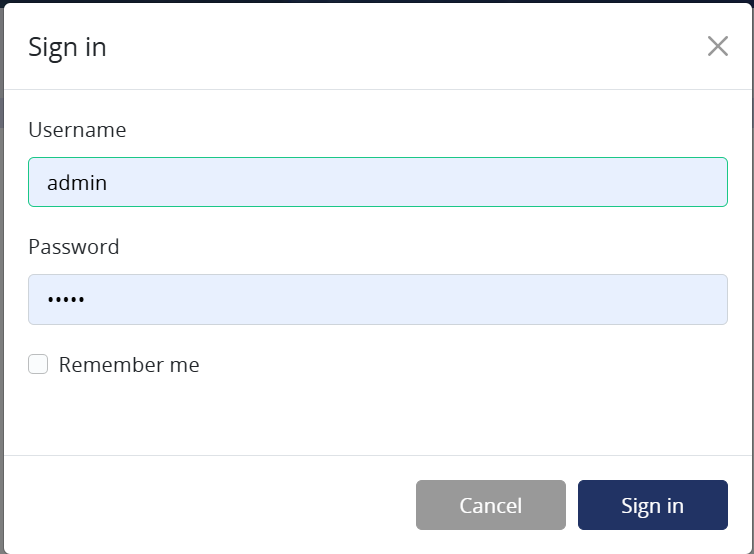
Info
An Administrator user with username and password "admin" is provided by default, but we recommend you create another administrator as soon as possible with a stronger password and delete the first one while logged in with the actual new administrator.
Administration
When the admin role is assigned to a user in the AST Control Panel, they gain access to the "Admin" menu. This menu provides various administrative functionalities, including user management, system metrics, health status, log management, application configuration, and API documentation.
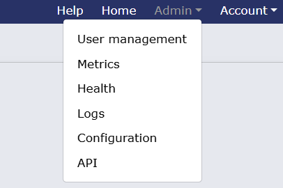
User management
As an administrator, you can access the User Role Maintenance to change roles of other existing users, delete them, or create new users and assign them a password and roles .
Click admin dropdown in the upper right panel and select User management.

Click create a new user or use buttons next to respective user in table to change details.
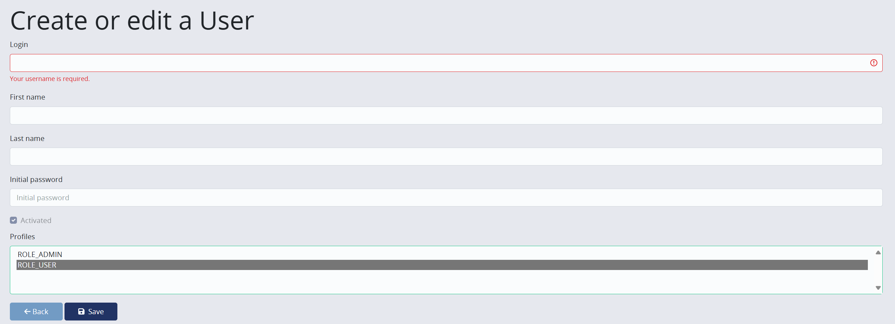
This view allows an administrator to define login credentials and assign access roles (e.g., ROLE_ADMIN, ROLE_USER) for the control panel. Each role will have access to the corresponding view.
| Role type | Rights |
|---|---|
| ROLE_USER | User can only display reports and run test cases, modify/create test cases and sets. Admin operations not available |
| ROLE_ADMIN | Administrative role, all right assigned |
Important
Admin user needs to have user_role and admin_role (both) assigned as rights. So it is only user or both for administrative access.
After logging in with your user, you are navigated to landing page where you will plenty of options on navigation panel, where you can access test cases and explore plenty of functionalities.
Metrics
The Metrics tab provides an overview of the system's performance and usage statistics. It includes JVM metrics, HTTP request metrics, threads and other relevant performance indicators. This information can be useful for monitoring the health of the application and identifying potential issues.
Health
The Health tab displays the current health status of the application and its components.
Logs
The Logs tab allows you to view and manage application logs. You can set log levels (e.g., INFO, ERROR) for different package namespaces. This is useful for troubleshooting and monitoring the application's behavior.
Configuration
The Configuration tab provides access to the application's configuration properties. You can also upload and download some necessary files for the application, such as ast.properties file etc.
In the configuration files you can set up files necessary for the application:
| File | Description |
|---|---|
| ast.properties | Main configuration file for the application where you can set up various properties for the application such the avaloq connection details etc. |
| ast.license | License file for the application, without a valid file the tests will not execute. |
| ast.globalsettings | Global settings file where you can set up the business user. |
| report_template_for_html_report.xslt | XSLT file used for transformation of XML report to HTML report. You can customize the HTML report by changing this file. |
| report_template_for_excel_report.xls | Excel template used for transformation of XML report to Excel report. You can customize the Excel report by changing this file.. |
In the application configuration section you can set up various properties:
| Property | Description |
|---|---|
| ast-control-panel.web.domain | Web domain for project. |
| ast-core.properties-file-path | Path to the ast.properties file if you would decide to mount it to the image. For more details on how to mount this file see Mounting of ast.properties section. |
| ast-control-panel.execution.max-parallel-processes | The number of maximum parallel processes for test execution. This is used to limit the number of parallel executions that can be run at the same time. If the number of scheduled executions exceeds this number, the additional executions will be queued until a slot is available. |
| ast-control-panel.integration.alm.enabled | Flag to enable or disable the ALM integration. If true more options will be available in the configuration for ALM integration. For more details on ALM integration see ALM integration documentation. |
| ast-control-panel.integration.xray.enabled | Flag to enable or disable the Xray integration. If true more options will be available in the configuration for Xray integration. For more details on Xray integration see Xray integration documentation. |
| ast-control-panel.user-interface.header-color | Property to set up the color of the header in the control panel. You can use any valid CSS hex color value for this property. |
| ast-control-panel.user-interface.header-text-color | Property to set up the color of the text in the header in the control panel. You can use any valid CSS hex color value for this property. |
The override checkbox must be selected to use the value you set up, otherwise the default value will be used. Default values are set up in the application db.
API
The API tab provides access to the REST API documentation and allows you to test API endpoints directly from the control panel.
The first APIs are the management ones. To see the solution API documentation you need to select the "springdocDefault" option from the dropdown:
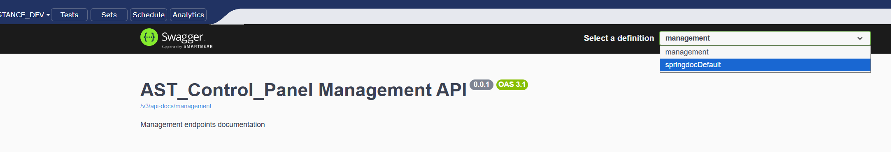
Navigation panel
Main navigation menu
| Menu | Description |
|---|---|
| Instance Selection | Used to choose the environment or system under test. |
| Tests | Displays and manages individual test cases. This is the core repository for all tests. |
| Sets | Organizes multiple tests into logical groups or suites for streamlined execution. |
| Schedule | Displays scheduled and finished executions. Provides executions details. |
| Analytics | Provides insights and reports on test execution results, trends, and performance. |
Each tab navigates you to separate sections described in table and in following chapters in more details.

Administrative & user-specific menu
| Menu | Description |
|---|---|
| Help | Provides access to documentation/tutorials. |
| Home | Navigates back to the main dashboard or landing page of the application. |
| Admin | Contains administrative settings for managing users, permissions, and system configurations. |
| Account | Manages the current user's profile, settings, and login information. |
Test Case Repository
Click 'Tests' tab on navigation panel to go to test repository. Following chapter describes the functionality and how to navigate basic features of test case repository.
Info
The Test menu on the AST Control Panel is designed for the comprehensive management of automated test cases.
Interface overwiew
The interface of AST is divided into two main sections:
-
left-hand navigation panel with menu structure and filtering options
-
central content area with test content administration functionalities and user-specific options.
The interface provides hierarchical navigation for test scripts and a central content area for viewing and editing the XML-based test logic.
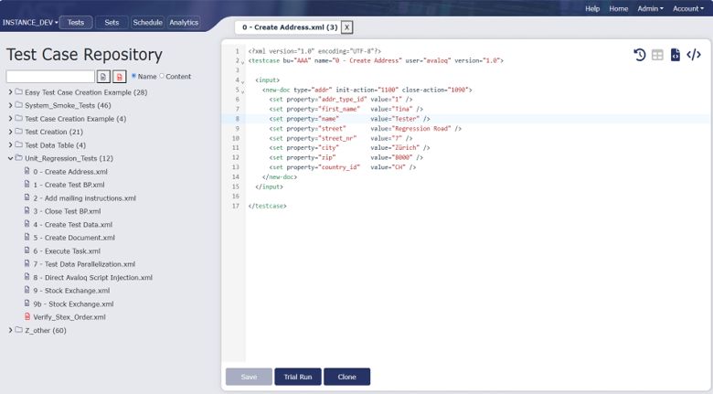
Managing Test Cases
Info
Most of the work with test cases and test sets is done on left side of the screen focusing on navigational tree containing folders with test cases and methods. Right side is reserved for display and editing the content of test case.
Tree display provides a clear and organized view of the entire test case repository. This hierarchical structure allows users to browse through different categories and sub-categories of tests, akin to a file system.
Each folder within the tree is labeled with a descriptive name(of the users choosing) and includes a count of the test cases it contains, giving the user an immediate sense of the repository's scope.
User can create modify or delete folders, test cases or methods. To work with test cases or folders right-click the mentioned item. Then you see context menu with all the functionalities.
Test case details
When a specific test case is selected from this repository (by double-clicking the test case), the main content area of the control panel populates with its details and controls. In the left panel you can see its details and further options to 'open' or to 'schedule' the test case without any further changes.
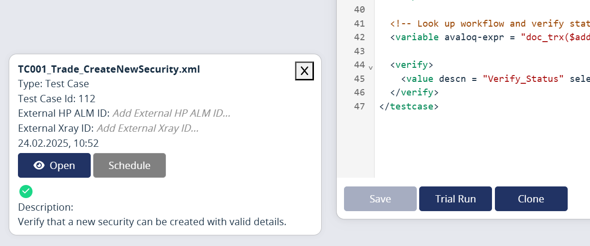
Under Open and schedule buttons are test run status button that show us results of last 5 runs. You can click on to display / download clicked execution report.
Execution Reporting
After a test case has been executed, a user can access its detailed report. This report offers three different viewing formats to accommodate various user needs and external tools: HTML for a user-friendly, web-based view; Log for a detailed, step-by-step text record; and XML for a structured data format suitable for parsing by other applications.
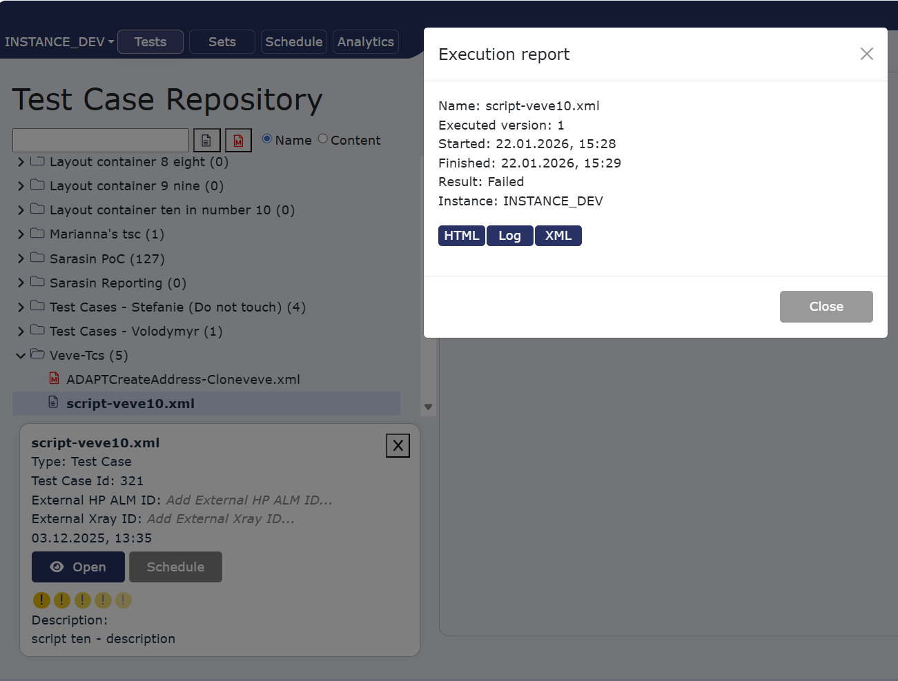
Editor features
To continue to editing functionalities of test case details click 'Open' button to see test case content.
The actions bar provides critical functionalities for interacting with the selected test case:
-
Save or discard any modifications
-
Trial Run (test run)
-
Clone (duplicate the test)
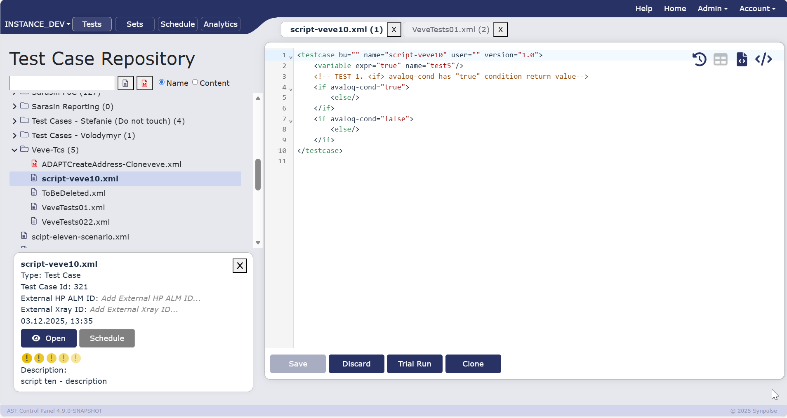
These controls are essential for a user's workflow, allowing for quick validation and execution of a test without leaving the screen.
Furthermore, a dedicated pane at the bottom-left corner of the interface provides additional metadata and high-level actions for the selected test. This section summarizes key information like the File Name and Path of the test case, offering a quick reference.
It also includes buttons to Open the test or Schedule its execution, integrating the test management with the wider scheduling features of the AST Control Panel.
This multi-pane layout ensures that the user has a complete overview of the test case's location, content, and available actions all in one view.
Each test case is opened in separate tab. You can have maximum of 8 test cases opened at one time.
Additional editor features
Test case editor offers another set of useful functionalities that help you with code checking, version comparison and data upload. These are located in upper right part of editor.

Test case history
Test case history button displays all the edited and saved versions of displayed document. You can display all of these in editor, change them and of course compare these changes with selected versions.
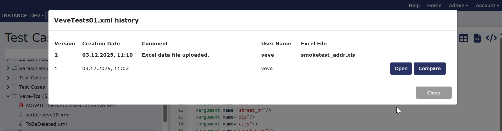
To compare different versions click the button with corresponding name and select version from dropdowns which you want to compare.
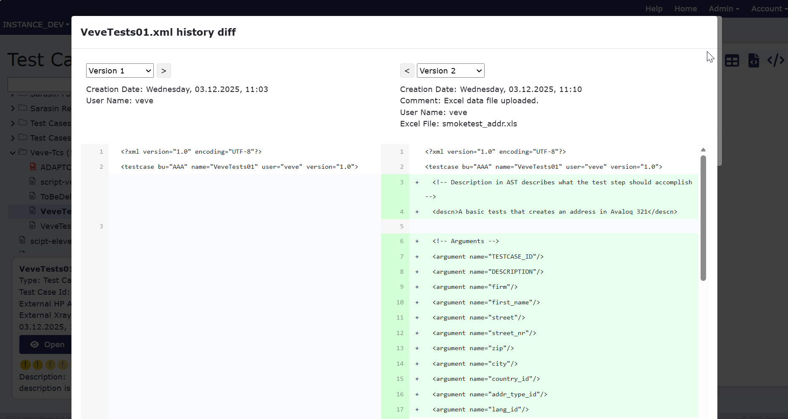
Test case data
After clicking 'test data' button you can:
-
Upload new excel file with data
-
Download data file that is currently in use
-
Remove the data file
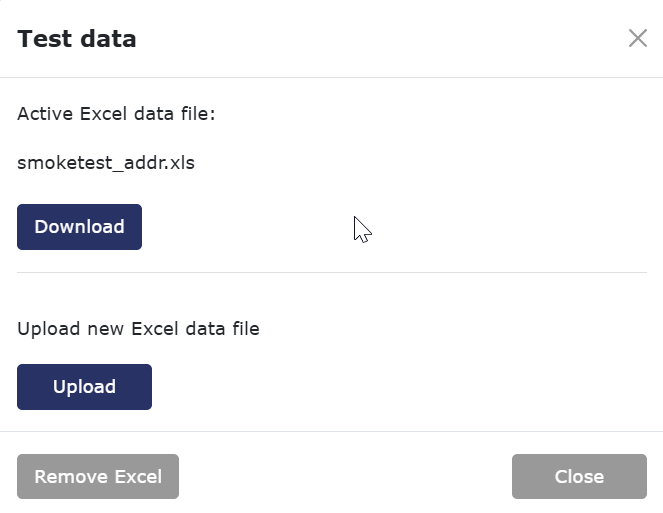
Warning
Uploading new excel file removes old one. There can be only 1 data file in usage!
To understand more the test data topic please read this chapter: Test script and test data design.
Rebuild document
Rebuild document reprocesses the entire file from scratch. The editor re-parses the document, re-applies structure, references, and validations to make sure everything is consistent and up to date. It’s typically used after major changes or when the document gets out of sync.
Text formatting
Text formatting helps you to checks how the document would look after formatting rules are applied, without permanently changing it. It helps you preview spacing, indentation, and layout issues to confirm the formatting is correct before saving or publishing.
Create, edit and manage test cases
Info
Right-click the test case/method or folder (in the navigation tree) to invoke context menu with a range of actions.
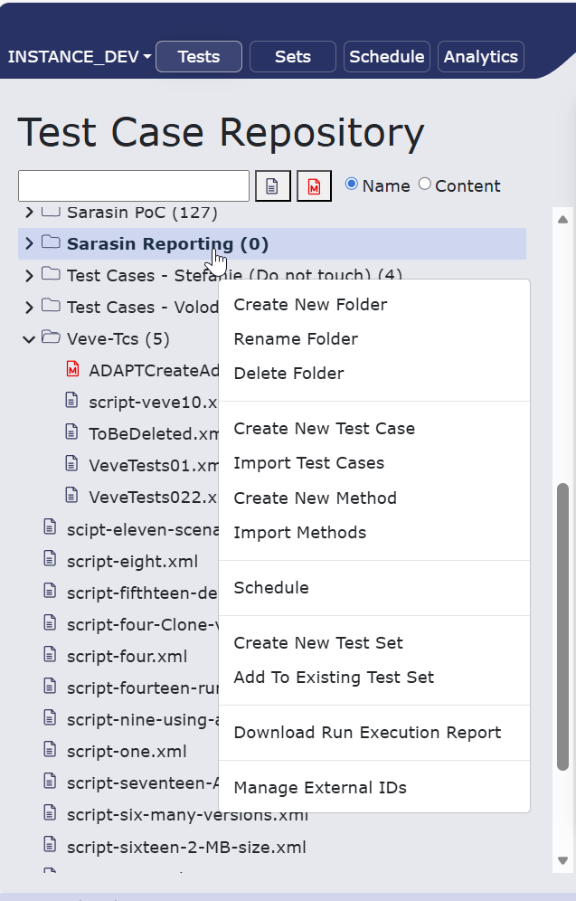
These functions streamline the entire test management workflow:
Folder context menu
| Actions for folder | Description |
|---|---|
| Create new folder | Creates new folder in tree structure |
| Rename folder | Renames selected folder |
| Delete folder | Permanently deletes selected folder |
| Create new test case | Creates new test case |
| Import test cases | Imports test case into selected folder from file. |
| Create new method | Creates new method |
| Import methods | Imports new method from file |
| Schedule | Opens a dialog to schedule a single execution or a series of executions for the test case. |
| Create New Test Set | Allows the user to create a new group or suite and add the current test case to it. |
| Add to Existing Test Set | Enables the user to add the selected test case to an already existing test set. |
| Download Run Execution Report | Provides the option to download execution reports for use with external reporting tools. |
| Manage external IDs | Takes care of external ID management (download present ones or upload new ones) |
Test case context menu
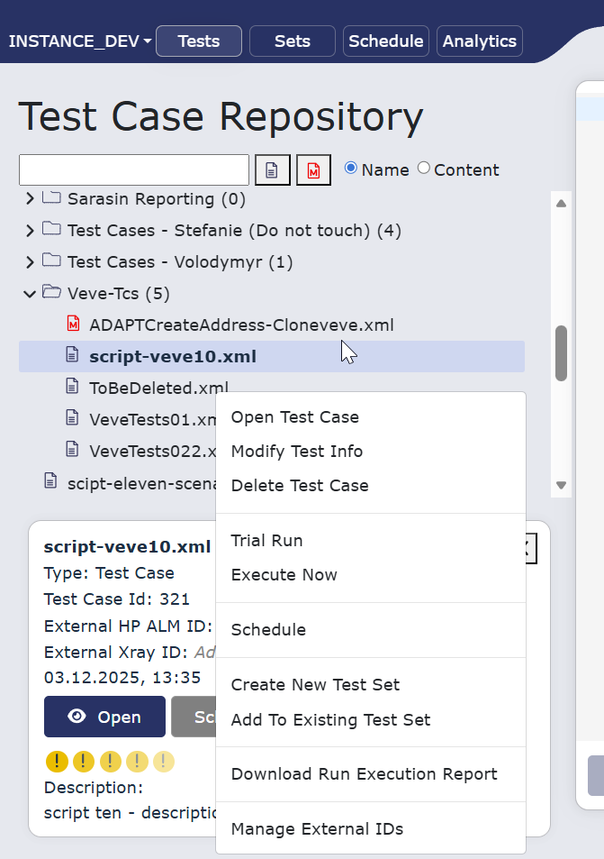
| Actions for Test case | Description |
|---|---|
| Open Test Case | Opens an existing test case for viewing or editing. |
| Modify Test Information | Enables the user to change the name or other high-level metadata of the test case. |
| Delete Test Case | Permanently removes a test case from the repository. Note: This action cannot be undone. |
| Trial Run | Initiates an execution of the test case that does not record the results, ideal for quick debugging or validation. |
| Execute Now | Schedules the test case for immediate execution. |
| Schedule | Opens a dialog to schedule a single execution or a series of executions for the test case. |
| Create New Test Set | Allows the user to create a new group or suite and add the current test case to it. |
| Add to Existing Test Set | Enables the user to add the selected test case to an already existing test set. |
| Download Run Execution Report | Provides the option to download execution reports for use with external reporting tools. |
| Manage external IDs | Takes care of external ID management (download present ones or upload new ones) |
Method context menu
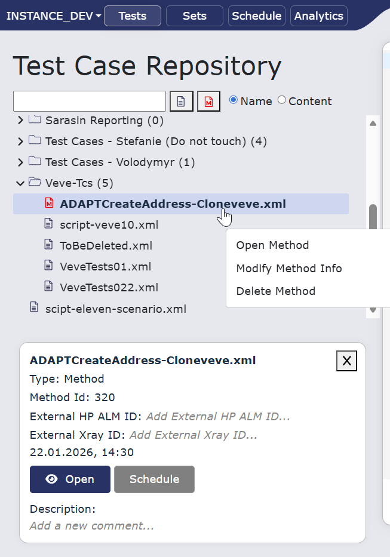
| Actions for Method | Description |
|---|---|
| Open Method | Opens an existing method for viewing or editing. |
| Modify Method Info | Enables the user to change the name or other high-level metadata of the method. |
| Delete Method | Permanently removes a method from the repository. Note: This action cannot be undone. |
To understand further how to write test case scripts please read this chapter: Test script and test data design.
Test script definition
Test Script and Test Data
Test script XML Structure and Definition
Test cases are defined using XML notation, consisting of an opening tag, attributes, values, and a closing tag.
The basic structure of a test case is enclosed within the <testcase> element:
<?xml version="1.0" encoding="iso-8859-1"?>
<testcase version="1.0" user="avaloq" bu="AAA" name="uuid">
</testcase>
The table below details the attributes for the <testcase> tag:
| Attributes | Mandatory? | Description |
|---|---|---|
| version | Yes | Version number is always 1.0 |
| user | Yes | User to log in |
| bu | Yes | Business unit to log in. |
| name | Yes | Name of the test case. It must correspond to the filename. |
| max-errors | No | Maximum error limit in order before the test is interrupted. Test error limit validation is only applicable if the value is less than ast.verification_failure property's numeric value in ast.properties.If ast.verification_failure is continue, then the max-errors will be ignored and the test run will continue. |
| extra | No | Advanced flags are explicit here, for now only the following flags are available: skipping-empty-data-sets=true to skip tests with an empty data set instead of throwing an error. |
The XML notation supports various formats for defining attributes, ranging from multi-line long notation to a single-line compact format:
| Type | Notation | Comment |
|---|---|---|
| Long | <annotation> <key> "Type" </key><value> "Functional test" </value> </annotation> |
Attributes as child elements on several lines |
| Medium | <annotation> <key>"Type"</key><value>"Functional test"</value> </annotation> |
Attributes as child elements on one line |
| Short | <annotation key="Type" value="Functional test"> ... </annotation> |
Base element with attributes on several lines. |
| Compact | <annotation key="Type" value="Functional test" /> |
Base element with attributes on one line. |
Test Steps
AST differentiates between three primary step types:
- <input> - Sends a command to the Avaloq Banking System.
- <query> - Queries information from the Avaloq Banking System.
- <verify> - Verifies equality of properties.
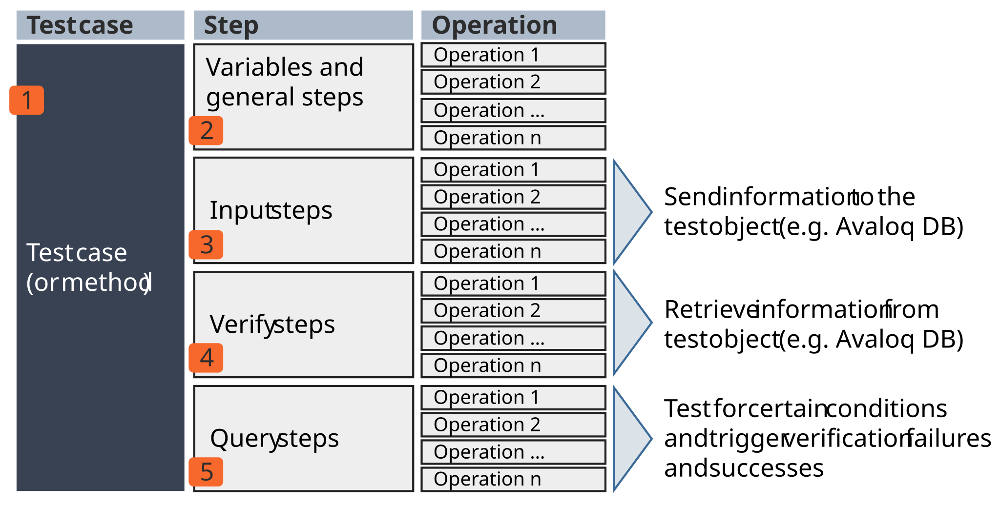
AST executes test steps sequentially, from top to bottom. The test script language employs a single flow control model and does not support nested flow controls.
Conditional Execution
A condition can be defined for any test step. If the condition is met, the step executes; otherwise, it is skipped. Conditions can be based on Avaloq script or JavaScript:
<input avaloq-cond="... a condition ..."> ...
<input script-cond="... a JavaScript condition ..."> ...
Example 1
<invoke-method name="sag/XYZ/foo" avaloq-cond="$var = 0">
Example 2
<input avaloq-cond="$sell_qty is not null"></input>
Example 3
<wait avaloq-cond="doc_forex($doc).wfc_status_id=54" raise-msg="Settlement was not processed" />
User-Specific Description
Each step can include a user-specific description using the <descn> element or a descn attribute.
This allows for the use of business-relevant messages in the AST log and reports. The visibility of this description in the log and reports is dependent on its placement and the ast.base.log_level setting.
| Placement | Test case | Step | Discussion |
|---|---|---|---|
| Sample | <testcase ...><descn>My testcase description </descn>... </testcase> |
<input><descn>My input step description </descn>... </input> |
<mass-pay descn="My Payment Test description">... </mass-pay> |
Placement of DESCN element |
DESCN must be placed right after the opening tag of a <testcase> element (i.e., before any further steps or operation elements) |
DESCN must be placed right after the opening tag of input, query or verify elements(i.e., before any operation elements) |
DESCN must be placed as an attribute within the opening tag of an operation element |
Visible in Log and Reports, if ast.base.log_level set to |
Testcase Step Operation Detail |
~~Testcase~~ Step Operation Detail |
~~Testcase~~ ~~Step~~ Operation Detail |
Annotations
Info
Annotations are used to define meta information for test cases.
By annotating a test case, it can be categorized or labeled. The keys and values within annotations do not affect the execution of the test case but are included in the test report for consolidation or analysis of a test run.
<?xml version="1.0" encoding="iso-8859-1"?>
<textcase version="1.0" user="avaloq" bu="AAA" name="CASH: Cost Calculation">
<annotations>
<annotation key="Stage" value="Modul" />
<annotation key="Kind" value="Functional Test" />
<annotation key="Situation" value="Regression" />
<annotation key="Domain" value="CASH" />
<annotation key="Domain" value="COST" />
</annotations>
...
Variables and Arguments
Variables and Arguments are the core tools you use to store and share information within a single test case, making your scripts dynamic and reusable
- Arguments link your test script to external test data (like an Excel file). The argument name must match the column header in the external spreadsheet.
- Variables are defined directly within your XML script to temporarily store values.
Both arguments and variables function identically during test execution
Declaring and Assigning Values
You should declare all variables and arguments near the beginning of your test case
| Tag | Purpose | Example |
|---|---|---|
<variable> |
Defines a new variable to hold dynamic values | <variable name="doc" /> |
<argument> |
Declares a field that imports data from a specific data sheet column | <argument name="AMOUNT" /> |
You can set an initial or default value for a variable using one of these expression types:
| Attribute | Purpose | Example |
|---|---|---|
avaloq-expr |
Sets a value using an Avaloq Script expression | <variable name="today" avaloq-expr="session.today" /> |
script-expr |
Sets a value using a JavaScript expression | <variable name="var" script-expr="-1 * $l\_amount" /> |
Reading Data (Input) and Saving Results (Output)
The syntax determines if you're pulling data from a variable/argument or pushing data into a variable.
| Action | Syntax | Purpose | Example |
|---|---|---|---|
| Input (Read) | Precede the name with a dollar sign (\$) : $variable_name |
Retrieves and uses the variable's value for the operation | <set property="bu_id" value="$customer" /> |
| Output (Write) | Use the name without the $ in the select attribute |
Stores the result of the operation into the variable | <out property="id" select="doc" /> |
Using Variables in Text
When inserting a variable into a plain text block - like a log message or message payload - it must be enclosed in curly brackets ({}).
- Description (Log/Reports):
<descn>Object PersonID = {$obj_person_id}</descn> - Message/File Payload:
<payload>AFGH{$myVar}ABC</payload>
Troubleshooting Your Scripts
The <debug> tag is a crucial tool for developers to inspect data flow and troubleshoot logic during a test run
It allows you to display a text message or the current value of one or more variables in the console log
How to Use It
To include a variable's content, you must enclose it in both the dollar sign prefix and the curly brackets: {$variableName}.
| Usage | Example |
|---|---|
| Debug Statement | <debug>Testing with variable [{$constUserName}]</debug> |
Info
The debug message is only displayed in the log output if the system setting ast.base.debug is explicitly set to true in the main configuration file (ast.properties)
Overview of Basic Tags and Control Statements
These tags serve as the fundamental "glue" between test steps and operations, allowing you to control execution flow and manage session settings.
| Tag / Control Statement | Description |
|---|---|
<argument> |
Defines a placeholder for importing external data from a spreadsheet |
<variable> |
Defines a new variable for local data storage |
<debug> |
Displays a customizable message or variable content in the log (if enabled) |
<session> |
Switches the active user, business unit (BU), or Avaloq instance for subsequent operations |
<wait> |
Halts test execution until a specified timeout passes or a defined Avaloq/JavaScript condition is met |
<if>, <select> |
Conditional Execution: Evaluates an Avaloq expression and only runs the enclosed tags if the condition is satisfied |
<invoke-method> |
Calls a reusable block of test logic (a method) defined externally. |
<setting> |
Modifies a core AST property (like the application log level) during the test run. |
Example of a Simple Test Case
The preceding chapters introduced the basic elements of a test case, specifically the three core steps: input, query, and verify. This section provides a simple, illustrative example. The context for this test case is the requirement to create a Person and an Address as test data within the test system.
Step 1: Address Creation
The first step involves creating a new Address record in the system using the <input> block.
<?xml version="1.0" encoding="UTF-8"?>
<testcase bu="AAA" name="0 - Create Address & Person" user="avaloq" version="1.0">
<!-- Create Address -->
<input>
<new-doc type="addr" init-action="1100" close-action="1090">
<set property="addr_type_id" value="1" />
<set property="first_name" value="Tina" />
<set property="name" value="Tester" />
<set property="street" value="Regression Road" />
<set property="street_nr" value="7" />
<set property="city" value="Zürich" />
<set property="zip" value="8000" />
<set property="country_id" value="CH" />
</new-doc>
</input>
</testcase>
Step 2: Person Creation and Address ID Transfer
The second step is the creation of a Person record that uses the address created in the first step. If a unique identifier was not explicitly used during the address creation, its ID must be transferred using a temporary value.
To facilitate this transfer, a parameter is populated within the address creation's input section using the tag <out property="id" select="addr_doc_id" />. This transfers the newly created address ID to the local variable addr_doc_id.
<?xml version="1.0" encoding="UTF-8"?>
<testcase bu="AAA" name="0 - Create Address & Person" user="avaloq" version="1.0">
<!-- Local variable definition -->
<variable name="l_obj_addr_id" />
<!-- Create Address -->
<input>
<new-doc type="addr" init-action="1100" close-action="1090">
<set ... />
...
<out property="id" select="l_obj_addr_id" />
</input>
<!-- Create Person -->
<input>
<descn>Natürliche Person erfassen</descn>
<new-doc type="person" init-action="1100" close-action="1019">
<set property="form_id" value="917" />
<set property="person_det.person_type_id" value="person_natural" />
<set property="person_name_list(1).first_name" value="$in_first_name" />
<set property="person_name_list(1).middle_name" value="$in_middle_name" />
<set property="person_name_list(1).last_name" value="$in_name" />
<set property="sort_alpha" value="$in_sort_alpha" />
<set property="obj_extn.person_sym" value="$in_sort_alpha" />
<set property="domi_addr_id" value="$l_obj_addr_id" />
<out property="id" select="person_doc_id" />
</new-doc>
</input>
</testcase>
Step 3: Verification
Following the creation steps, the <verify> statement is used to confirm that the Person record was successfully created. This involves reading the status of the person into the variable a_status_2 using an avaloq-expr and subsequently writing this status to the log via the <descn> tag.
The <verify> block checks if the status of the newly created person (referenced by the variable $person_doc_id) equals the expected value, 90.
<variable name="a_status_2" avaloq-expr="doc_person($person_doc_id).wfc_status_id" />
<verify>
<descn>Verifizieren Orderstatus </descn>
<value select="a_status_2" value="90" />
</verify>
<variable name="obj_person_id" avaloq-expr="'#'||doc_person($person_doc_id).person_id" />
<input>
<descn> Object PersonID = {$obj_person_id} </descn>
</input>
Test Data Management and Integration
AST supports importing test data from Excel.
Using Excel for Test Data
Data from an Excel sheet can be imported for use in test cases. The first sheet contains the test data, where each column name must have a corresponding <argument> defined in the test case. The second sheet is used to link the test case data rows to a specific test case XML file.
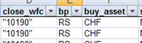
Each column requires a corresponding argument in the test case:
<argument name="close_wfc" />
<argument name="bp" />
<argument name="buy_asset" />
These arguments can be used the same way as variables: $close_wfc, $bp, $buy_asset. Since arguments are treated like variables, the same naming rules apply.
To assign the test case data to a test case, the second sheet is used:
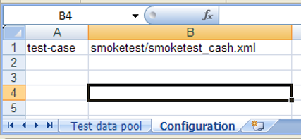
Example - Domestic Payment
Test data increases the operational variance of test cases by enabling the execution of a single test logic with different input values. For example, test cases related to domestic payments utilize varied test data to confirm system behavior under diverse conditions, demonstrating this approach.
The test data look as as follows:
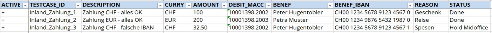
The arguments are defined as follows:
<testcase version="1.0" user="$ast_user1" bu="$ast_bu1" name="$TESTCASE_ID">
<descn>$DESCRIPTION</descn>
<annotations>
<annotation key="Stage" value="System Test" />
<annotation key="Kind" value="System Test" />
<annotation key="Situation" value="System Test" />
<annotation key="Domain" value="System Test" />
<annotation key="Business Type" value="System Test" />
</annotations>
<!-- Arguments for the test cases -->
<argument name="TESTCASE_ID">
<argument name="DESCRIPTION">
<argument name="CURRY">
<argument name="AMOUNT">
<argument name="DEBIT_MACC">
<argument name="BENEF">
<argument name="BENEF_IBAN">
<argument name="REASON">
<argument name="STATUS">
Info
- Based on the column names of the read-in test data, test data variables are automatically generated.
- These can be used arbitrarily in the test case definition.
In addition to actual test data, expected results, etc. can also be read:
- The test data variables are automatically replaced with the corresponding test case data at test case runtime.
- Of course, such dynamic values can also be used in the tests. In this way, a whole series of test cases can be generated with a "basic test case".
<!-- Variable Definition -->
<variable name="l_doc" />
<!-- Create order -->
<input>
<descn>Erstellt einen Zahlungsauftrag</descn>
<new-doc type="pay" init-action="open_dom_pay" close-action="proceed">
<set property="deb_macc_id" value="$DEBIT_MACC" />
<set property="curry_id" value="$CURRY" />
<set property="amount" value="$AMOUNT" />
<set property="benef_iban" value="$BENEF_IBAN" />
<set property="benef" value="$BENEF" />
<set property="benef_info" value="$REASON" />
<set property="id" select="l_doc" />
</new-doc>
</input>
<!-- Read order status -->
<variable avaloq-expr="doc_trx($l_doc).wfc_status.name" name="result" />
<!-- Verify order status -->
<verify>
<descn>Verify order status</descn>
<value descn="Status" select="$result" value="$STATUS" />
</verify>
</testcase>
Integration of Script Languages
In addition to the AST script language used for writing test cases, AST permits the execution of Avaloq Script expressions and code blocks. However, the use of Avaloq Script has limitations, particularly when handling large strings due to Avaloq's buffer sizes and the need to escape characters within AST variables used in Avaloq Script.
JavaScript Integration
With AST release 2.4 and later, a general use of Avaloq independent script languages was introduced. The only non-Avaloq script language currently implemented is JavaScript. The use of JavaScript is available with the following AST operations and control statements:
<variable>tag, specifically with the attribute script-expr.<input>script operation.<verify>value operation, specifically with the attribute script-expr.<wait>statement, specifically with the attribute script-cond.- Conditional execution of test steps, using the attribute script-cond.
<invoke-method>, using the attribute script-cond.
The type of script language to be used can be specified either in the ast.properties file with the setting ast.base.dflt.script_lang = javascript, or directly with the attribute lang="javascript" when used with any script-expr or script-cond attribute. For a detailed description of these, refer to chapter JavaScript execution
Binding of AST Variables to JavaScript
There are two methods available for passing AST variables to JavaScript code.
Automatic Detection
The first method is analogous to the one used with Avaloq-Script. AST variables within the script code are automatically detected and their string value is bound to the corresponding JavaScript variable. Unlike in Avaloq-Script, AST variables will not be literally expanded into the script code. This practice prevents issues that can occur when AST variables contain specific characters such as apostrophes or linefeeds.
Input Script Operation
The second method provides a more precise way to bind AST variables to JavaScript variables and also facilitates passing results from script expressions back to AST. This method is exclusively available with the input script operation.
More information
For further information please see chapter JavaScript execution and PL/SQL execution
Input Operations
Input operations modify the test object.
Order creation
The new-doc operation creates a new order in the Avaloq Banking System, supporting all interactions a user would perform in the graphical user interface. The process follows these steps:
- Create the Order: A new order is created by executing either an initial workflow action or a context action.
- Set Order Fields: You can set the order's fields or execute its methods. Any property defined in the DDIC (Data Dictionary) of the business type can be configured. Values can be entered just as a user would in the GUI, for example, using expressions like
todayor-1vfor date fields. - Close the Order: The order is then closed by executing a workflow action to store or proceed with it.
- Retrieve Properties: You can retrieve properties of the order after its creation.
If order validation failures occur when the final workflow action is executed, they can be overridden using the "add-override" command.
<input> | <new-doc ...> - Creates a new order using an initial workflow action and a close workflow action.
| Attributes | Description |
|---|---|
| type (IN) | Avaloq Meta Type |
| init-action (IN) | Initialization workflow action |
| ctx-action (IN) | Performs a context action that creates a new order (alternative to the parameter init-action). |
| close-action (IN) | Closing workflow action |
| set (IN) | Sets 1...n properties of a specific Avaloq Meta Type |
| scriplet (IN) | A piece of Avaloq Script code, that is executed. The alias "tdoc" can be used to reference the current order. |
| do (IN) | Performs an action |
| add-override (IN) | Sets an entry to the add-override table with an optional comment attribute. |
| script-action (IN) | Avaloq script function which must return a mem_doc reference. This attribute replaces init-action. |
| modify-object (IN) | The id of the object to be modified in this order, instead of creating a new object. |
| expect-failure-msg (IN) | Possibly specify a message which is expected in this block of operations (expect-failure-msg). You can use % to specify any sequence of chars. |
| out (OUT) | Provides access to all fields of the generated order (DOC). Typically the identifier of the order is retrieved. |
Example code
<input>
<descn>Creating new payment and proceed</descn>
<new-doc type="pay" init-action="open_dom" close-action="13">
<set property="pay_method_id" value="post_esr" />
<set property="amount" value="123.45" />
<set property="curry_id" value="CHF" />
<set property="deb_macc_id" value="10001401.2003" />
<set property="benef_acc" value="01-4544-9" />
<set property="benef" value="Credit Suisse" />
<out property="id" select="payment" />
</new-doc>
</input>
Manipulating DDIC List Entries
When setting properties on a DDIC list (e.g., realvalu_list), AST automatically adds a row to the list if the row does not exist yet, making the operation transparent to the user.
You can directly manipulate list contents using the <set property=...> or <do stmt=...> actions, provided the underlying Data Dictionary (DDIC) supports it.
| Action Type | Example Code | Description |
|---|---|---|
| Adding/Editing | <set property="realvalu_list(1).mtd_id" value="external" /> |
Sets a property on a list entry specified by its index (List index of the list entry to be edited). |
| Adding Element (Simple) | <do stmt="book_list.add" /> |
Adds a new element to the list. |
| Adding Comlex Element | <do stmt="cost_entry(1).entry_list.add(5, $costs, 1)" /> |
Adds a list element with additional arguments. |
| Removing Element | <do stmt="chld_list.remv(1)" /> |
Removes the item at the given index. |
| Clearing List | <do stmt="mkt_rel_list.clear" /> |
Clears the whole list. |
Scriptlets
The doc and new-doc operations support a scriptlet parameter, which allows you to integrate Avaloq Script code directly into the order generation process. This parameter is particularly useful for situations where you need to reference data from the order itself. For example, you can use a scriptlet to fill an order's external reference number with its own ID.
<input>
<descn>
Check issuing: doc_id is used as check-nr and must be filled in the external reference number of the payment
</descn>
<new-doc type="pay" init-action="open_dom" close-action="13">
<scriptlet>tdoc.extl_ref_nr := tdoc.doc_id</scriptlet>
<set property="pay_method_id" value="dom" />
<set property="amount" value="1000.00" />
<set property="curry_id" value="CHF" />
...
</new_doc>
</input>
Overrides and User-Interface Messages
Control over the occurrence of user interface messages and the ability to override these messages is granted by the ui-msgelement. A message can be matched by providing a pattern. Alternately, in case of an override message, matching can be performed by passing a code_override element (ID, name, or intl_id).
<input> | <new-doc ...> | <ui-msg ...> - Verifies User interface messages and overrules override messages.
| Attributes | Description |
|---|---|
| text (IN) | Pattern against with an occurring message is compared. The pattern may contain % as wildcard. |
| override (IN) | Name, user_id or intl_id of a override |
| accept-override (IN) | Boolean value (true/false) which decides whether an override is accepted or not. |
| expect (IN) | Boolean value (true/false) which decides whether specified message or override is expected by the testcase. The System reports a failure if no such message or override occurs while execution. This attribute is true by default. |
Verifying Mandatory Error Messages
When using <ui-msg> without accept-override, you are verifying the message. If expect="true" (the default), AST enforces that this message appears to confirm validation is working as expected.
Example: Verify Failure Message
<ui-msg text="Mandatory: Business Partner%" expect="true" />
Accepting or Denying Overrides
If the message is an override (a warning that can be accepted or denied) , set accept-override to true to proceed or false to deny. You can match the override using a text pattern or directly using its ID.
Example: Accept by Pattern
<ui-msg text="'Forward 1 Date' is in the past!%" accept-override="true" />
Example: Deny by Variable
<variable name="ui_text" avaloq-expr="'''Forward 1 Date'' is in the past!%'" />
<ui-msg text="{$ui_text}" accept-override="false" />
Example: Accept by Override ID
<ui-msg override="5042" accept-override="true"/>
Example: Accept Any Override
<ui-msg text="%" accept-override="true" expect="false" />
Order processing
The order processing operation works similarly to the new-doc operation, but it's designed to process an existing order. You can identify the specific order you want to work with by either its doc_id or an order key, such as its external reference number.
<input> | <doc ...> - Processes an existing order.
| Attributes | Description |
|---|---|
| id (IN) | Id of order to be processed. Alternatively an order keycan be used to identify the order to be processed. (All other parameters see the description of the new-doc operation.) |
Example code:
<input>
<descn>Executing workflow action proceed</descn>
<doc id="$docId" action="proceed" />
</input>
File processing
The file input operation allows you to upload or process a file within the Avaloq Banking System.
- Upload: This action transports and stores a file in the DB IO directory on the Oracle instance.
- Process: This action feeds the file into the Avaloq file processing engine, which generates a set of messages and orders.
This operation's processing mode is only compatible with standard Avaloq file types. It is not suitable for processing custom file types, which are handled by program task 927. For custom files, you should use the store action to upload the file and then use the dedicated task (ID 927) to process it.
<input> | <file ...> - Upload a file to the Avaloq DB IO directory and process it.
| Attributes | Description |
|---|---|
| name (IN) | The filename with which the file is to be handled. |
| type (IN) | The type of the file. |
| action (IN) | The action to be performed on the file, can either be"store" or "process". |
| payload (IN) | The full content of the file. |
| action (IN) | Workflow action |
| out (OUT) | Indexed access to the generated messages and orders of the file as well as to all fields of the data dictionary FILE_UPL. |
Example code:
<input>
<file type="KTB20" name="$file_name" action="process">
<payload>...<payload>
<out property="msg_id(1)" select="msg_1" />
<out property="doc_id(2)" select="doc_2" />
</file>
</input>
Message processing
The message input operation allows you to process messages within the Avaloq Banking System. This function simulates an external system, sending messages directly to the Avaloq Messaging Interface (AMI), bypassing the Avaloq MQ Bridge.
<input> | <msg ...> - Upload a message to the Avaloq Message Interface (AMI) and process it.
| Attributes | Description |
|---|---|
| network (IN) | The AMI network of the message (mandatory). |
| type (IN) | The message type (optional). |
| status (IN) | The expected message status (optional). |
| payload (IN) | The raw content of the message. |
| out (OUT) | Access to the DDIC MEM_MSG, specifically to thegenerated order with the property "doc_id". |
Example code:
<input>
<msg network="SIC" type="D10" status="prc">
<payload>
<![CDATA[#D10
<02>002301
<03>{$traref}
...]]>
</payload>
<out select="docId" property="doc_id" />
<out select="doc_status" property="doc.wfc_status_id" />
</msg>
</input>
Mass pay operation
The mass pay input operation allows and creates the process of mass payment in Avaloq Banking System.
<input> | <mass-pay ...> - Executes Mass pay inside an AST test script.
| Attributes | Description |
|---|---|
| mass-pay-wfc (IN) | Mass payment of workflow control action id of "mem_doc_mass". |
| init-action (IN) | Initialization workflow action |
| close-action (IN) | Closing workflow action |
| form-id (IN) | Mass payment of form id of "mem_doc_mass" |
| descn (IN) | Define the description of the payment (optional) |
| select (IN) | Return value of executed Avaloq Script (required) |
| payment (IN) | Define the fields and values of "mem_doc_pay" for payment operation. |
| add-override (IN) | Sets an entry to the add-override table with an optional comment attribute. |
| ui-msg (IN) | Control over the occurrence of user interface messages and the ability to override these messages is granted by the ui-msg element. |
| scriptlet (IN) | Some piece of Avaloq Script code, that is executed. The alias "tdoc" can be used to reference the current order. |
Example code:
<input>
<mass-pay select="sqlResult" form-id="956" mass-pay-wfc="1" init-action="10001" close-action="10167" descn="Payment test">
<payment>
<set property="order_type_id" value="1123" />
<set property="benef_macc_id" value="#168810" />
<set property="medium_id" value="1" />
<set property="asset_id" value="#3942" />
<set property="amount" value="1200" />
<set property="deb_macc_id" value="#1101963" />
</payment>
<add-override name="asset_closed" check="false" />
<ui-msg override="asset_closed" text="%" accept-override="true" expect="false" />
<scriptlet> session.debug('Payment'||tdoc.doc_id); </scriptlet>
</mass-pay>
</input>
Avaloq Script execution
The AST tool can execute sections of the Avaloq scripting language, which is useful for tasks such as string concatenation or retrieving information not available from a standard DDIC (Data Dictionary). However, you should avoid using Avaloq Script if a different method is available.
Syntax and Usage The input for this operation must be valid Avaloq Script; otherwise, an error will be thrown.
- Return Statement: The syntax is extended to include a return statement, which lets you assign a value to an AST variable.
- AST Variables: Within the Avaloq Script code, you can reference AST variables by using a dollar sign ($) as a prefix to the variable name.
This feature provides a way to interact with data and perform custom logic when standard operations are insufficient.
<input> | <avaloq-script ...> - Executes Avaloq Script inside an AST test script
| Attributes | Description |
|---|---|
| avaloq-script (IN) | Avaloq Script code to be executed. |
| select (OUT) | Return value of executed Avaloq Script (optional). |
Example code:
<variable name="sic_s30" />
<input>
<descn>Generating response S30 message for networkSIC</descn>
<avaloq-script select="sic_s30">
declare
l_s30 text;
begin
l_s30 := '#S30' || chr(10) || '<12>098719' || chr(10) || '<13>' || msg($outMsgId).extl_ref_nr || chr(10)|| '<92B>' ||to_char(lookup.date($tag_92B),'YYYYMMDD') || chr(10) || '<94>01' || chr(10);
return l_s30;
end;
</avaloq-script>
</input>
JavaScript execution
Note
Starting with AST release 2.4, you can execute JavaScript code within your test scripts. The operation requires a valid JavaScript input; otherwise, an error will be thrown.
AST variables can be bound to JavaScript variables as strings using the parameter attribute. Since AST 3.1, you can also access certain AST APIs via the JavaScript Nashorn engine.
<input> | <java-script ...> - Executes Java Script inside an AST test script
| Attributes | Description |
|---|---|
| script (IN) | Specifies a script operation. With the lang attribute the script language can be defined. As JavaScript is the only language currently implemented this attribute is optional. |
| parameter (IN) | Binds an AST variable specified by value to theJavaScript variable specified by name. |
| payload (IN) | JavaScript code. AST variables will be expanded as strings in the script code ({$l_var}, same as in input msg operation). |
| out (OUT) | Values of string variables in JavaScript can be passed to AST variables. |
Example code (1):
<input>
<script lang="javascript">
<parameter name="alpha" value="$a" />
<parameter name="betha" value="$b" />
<parameter name="gamma" value="$c" />
<parameter name="delta" value="$d" />
<payload>
var result = 10;
var sum;
var product;
if (delta == null) {
result = alpha + betha + gamma;
}
sum = Number(alpha) + Number(betha) + Number(gamma);
product = alpha * betha * gamma;
result;
</payload>
<out property="result" select="l_res" />
<out property="sum" select="l_sum" />
<out property="product" select="l_prod" />
</script>
</input>
Example code (2)(Example for Javascript Nashorn APIs made available by AST):
<input>
<script lang="nashorn">
<payload>
<![CDATA[
var XML = Java.type('ch.sag.ast.util.XML');
var doc1 = XML.evalDocument("<root><state>stateA</state><command action='actionA'/></root>");
XML.setXPathInDocument(doc1, "/root/state", "stateB");
var state = XML.evalXPathFromDocument(doc1, '//state');
var action = XML.evalXPathFromDocument(doc1,'//command/@action');
var documentAsString = XML.getStringFromDocument(doc1);
]]>
</payload>
<out property="state" select="l_state" />
<out property="action" select="l_action" />
<out property="documentAsString"select="l_documentAsString" />
</script>
</input>
PL/SQL execution
You can execute PL/SQL code in AST versions 2.6 and later. This operation requires valid PL/SQL code as input; otherwise, it will throw an error. You can also bind AST variables as string variables to the PL/SQL code using the parameter attribute.
<input> | <util-plsql ...> - Executes PL/SQL inside an AST test script
| Attributes | Description |
|---|---|
| avaloq-script (IN) | PL/SQL script code to be executed. |
| payload (IN) | PL/SQL script code. AST variables will be expanded as strings in the script code ({$l_var}, same as in input msg operation). |
| connection (IN) | Optionally give a connection name as listed by the ext.conn. properties in ast.properties* to execute PL/SQL on a separate database. |
| Select (OUT) | Target variable where result is stored (optional). |
Example code
<input>
<descn>Block of pl/sql with return value</descn>
<util-plsql select="result" descn="PL/SQL block withreturn">
<payload>
declare
l_res number;
begin
-- do some fancy stuff
select max(id) into l_res from doc;
? := 'hello doc ' || l_res;
end
</payload>
</util-plsql>
</input>
Create Package execution
With AST release 2.7 and later, you can create a set of stored procedures and packages. The input for this operation must be valid SQL code for creating a stored procedure package.
<input> | <util-create-package ...> - Executes a create package SQL inside an AST test script
| Attributes | Description |
|---|---|
| payload (IN) | SQL CREATE PACKAGE to be executed. |
| select (OUT) | Target variable where result is stored (optional). |
Example code
<input>
<util-create-package select="sqlResult">
<payload>CREATE OR REPLACE PACKAGE K.AST$TEST# as
function get_test_val(
i_msg varchar2
,i_tag varchar2
) return varchar2;
end AST$TEST#;
</payload>
</util-create-package>
</input>
XML Creation
As of AST Release 2.8, you can create XML content dynamically within your tests using the util-xml operation. This allows you to build XML structures on the fly. To use this operation, the input must be a valid <util-xml> node structure, and all its attributes must be valid.
<input> | <util-xml ...> - Creates XML inside an AST test script
| Attributes | Description |
|---|---|
| tag-id (IN) | The structure of the XML nodes separated by "/", in form of tag-id="parentTag/childTag/childTagOfChildTag/..." (Applicable in "util-xml" and "util-xml-node" tags, seebelow) |
| newline (IN) | Set what type of character or special character to be use as newline example "\n" for new line or "\r\n" for carriage return. |
| indent (IN) | Set what type of character or special character to be use as tabulator "\t" to indent. |
| version (IN) | If attribute is present it determines what will be the version of the XML header. Default value is version="1.0". If "version" and "encoding" are both absent, then no header is written. |
| encoding (IN) | If attribute is present it determines what will be the encoding of the XML header. Default value is encoding="utf-8". If "version" and "encoding" are both absent, then no header is written. |
| clear-tags-if-empty (IN) | If set to true, any util-xml-node without a value will not be generated. If set to false, it will be generated.(Only applicable in "util-xml" tag) |
| avaloq-cond (IN) | Avaloq script expression that must evaluate to a boolean. The statement waits until the condition is satisfied, or a timeout occurs. For unconditional wait the attribute can be left out. (Applicable in "util-xml-node" and "util-xml-value" tags, see below) |
| select (OUT) | Target variable where result is stored. |
<util-xml ...> | <xml-if ...> - Adds the contained util-xml-node or checks the contained xml-if when the condition is satisfied, otherwise evaluates the same way the <else> section if contained.
| Attributes | Description |
|---|---|
| avaloq-cond (IN) | Avaloq script expression that must evaluate to a boolean. The statement waits until the condition is satisfied, or a timeout occurs. For unconditional wait the attribute can be left out. |
<util-xml ...> | <util-xml-node ...> - Create XML node inside util-xml or to another util-xml-node.
| Attributes | Description |
|---|---|
| tag-id (IN) | The structure of the XML nodes separated by "/", in form of tag-id="parentTag/childTag/childTagOfChildTag/..." |
| avaloq-cond (IN) | The condition to be verified in order for the content to beevaluated and executed. |
<util-xml ...> | <util-xml-attribute ...> - Create attribute/s for util-xml-node. Attribute/s will be added to the last node defined in util-xml-node's tag-id attribute.
| Attributes | Description |
|---|---|
| name (IN) | Name of the attribute |
| value (IN) | Value of the attribute |
| avaloq-cond (IN) | The condition to be verified in order for the content to beevaluated and executed. |
<util-xml ...> | <util-xml-value ...> - Create a text value for util-xml-node. Only one value will be added to the last nodedefined in util-xml-node's tag-id attribute.
| Attributes | Description |
|---|---|
| value (IN) | Value of the node |
| avaloq-cond (IN) | The condition to be verified in order for the content to beevaluated and executed. |
Example code
<util-xml tag-id="root/rootChild" select="ast_variable" newline="\r\n" indent="\t" clear-tags-if-empty="true" version="1.0" encoding="utf-8">
<xml-if avaloq-cond="1=1">
<util-xml-node tag-id="nodeParent" avaloq-cond="$ast_variable is not null">
<util-xml-node tag-id="nodeParent" avaloq-cond="$ast_variable is not null">
<util-xml-node tag-id="nodeChild" avaloq-cond="$ast_variable is not null">
<util-xml-attribute name="attr1" avaloq-cond="1=1">value{$ast_variable}</util-xml-attribute>
<util-xml-value avaloq-cond="$ast_variable is not null">{$ast_variable}</util-xml-value>
</util-xml-node>
<util-xml-node tag-id="nodeChild" avaloq-cond="$ast_variable is not null">
</util-xml-node>
</util-xml-node>
</xml-if>
</util-xml>
Task execution
The task-exec operation allows you to execute any task within the Avaloq Banking System. A task is identified by its ID or key. This operation supports setting all parameters accepted by the task, including normal input and pseudo parameters, as well as multiple values for a list parameter.
Tasks can be executed either synchronously (using the show or run modes) or asynchronously (using submit or print). For asynchronous execution, you can specify a timeout. If the task does not complete within this time frame, its execution is marked as a failure. This feature is useful for verifying that a task is executed within a specific performance time frame.
Additionally, the task-exec operation can return the raw output of an executed report.
<input> | <task-exec ...> - Executes an Avaloq task.
| Attributes | Description |
|---|---|
| task-def (IN) | Task definition (id, internal id or user id). |
| task-templ (IN) | Predefined task template (id, internal id or user id) |
| sync (IN) | Wait until task is finished in case of asynchronous execution (true|false), default is false |
| mode (IN) | Sets task execution mode exec (run, show in Avaloq GUI) or submit (submit or print in Avaloq GUI) (exec|submit) default is exec |
| timeout (IN) | Sets the timout in seconds for the task synchronization. Must be specified when sync is set to true. |
| Set (IN) | Sets 1...n parameters of the task. |
| select (IN) | Target variable where the report buffer is stored. |
Example code
<input>
<descn>Run credit violations task</descn>
<task-exec task-def="task_pos_cred_viol_gen">
<set property="LAYOUT_ID" value="UPD_CRED_VIOL_DFLT" />
<set property="DATE" value="0" />
<set property="GEN_DOC" value="+" />
<set property="asset_class_list_id" value="ass_type:afix" />
<set property="asset_class_list_id" value="ass_type:lcal" />
<set property="asset_class_list_id" value="ass_type:lfix" />
<set property="bp_list_id" value="RS" />
</task-exec>
</input>
<input>
<task-exec task-def="task_fina_serpil" sync="true"timeout="180">
<set property="DATE_LIST_ID" value="today" />
<set property="COLLAT_VAL_TYPE_LIST_ID" value="2" />
<set property="COLLAT_VAL_TYPE_LIST_ID" value="100" />
<set property="PARALLEL_EXEC_NR_PRC" value="2" />
</task-exec>
</input>
<!-- Report execution -->
<variable name="l_obj_id" avaloq-expr="'#'||lookup.bp_id('RUFRO')" />
<variable name="l_layout_id" avaloq-expr="lookup.task_layout_id('TASK_CRM_PROFILE.BP_DFLT')" />
<variable name="l_content" />
<input>
<task-exec task-def="task_crm_profile" select="l_content">
<set property="layout_list_id" value="$l_layout_id" />
<set property="obj_list_id" value="$l_obj_id" />
</task-exec>
</input>
Exec operation
The exec operation allows you to execute any command-line program from outside the AST framework. This is a flexible tool you can use to interact with your system, perform actions, and even retrieve data from the outside world.
Because this operation acts outside the main target object—the Avaloq Banking System—it can be used for both modifying and querying data. This means you'll find it in both the input and query operations sections of the documentation.
<input> | <cmd-exec ...> - Executes an external command-line program
| Attributes | Description |
|---|---|
| cmd (IN) | The command-line that is executed. |
| stdin (IN) | Name of the variable which holds the string that is fed to standard in of the external program. |
| stdout (IN) | Name of the variable in which stdout is stored (the content that the external program has written to its standard output) |
| exit-code (IN) | Name of the variable in which the exit code of the executed program is stored. |
| stderr | Name of the variable in which stderr is stored (the content the external program has written to its standard error output) |
| timeout (IN) | Time in seconds after which the external program is terminated (if it did not terminate before). |
Example code
<input>
<descn>run external application: {$app_name}</descn>
<cmd-exec cmd="$cmd" stdin="$stdin"stdout="stdout" stderr="stderr" timeout="$timeout" exit-code="exit-code" />
</input>
Report operation
The report operation allows you to tag your test cases with dynamic AST values and add custom information to output reports.
For an example of how this information is used in a report, please refer to the "Reporting" tab in the report.xls file included in the AST release package.
<report ...> - Additional information to the output reports
| Attributes | Description |
|---|---|
| tag (IN) | The tag name for the testcase. |
| value (IN) | Dynamic AST value to be tagged. |
| descn (IN) | The description for the additional report information. |
Example code
<testcase ...>
<report tag="DOC" value="{$l_doc}" descn="ExampleOrder" />
</testcase>
REST Requests
The rest-group tag allows you to issue arbitrary REST requests using its embedded rest-execute command.
<input> | <rest-group ...> - Executes embedded rest-execute and open-banking commands
| Attributes | Description |
|---|---|
| server (IN) | Url of server Rest services reside. |
| rest-execute (EMBEDDED) | Embedded command to issue specific Rest requests. If a Basic Authorization is needed use the rest.secured property in the ast.properties. |
Example code
<input>
<descn>Create prerequisites for Restrequests</descn>
<rest-group server="http://example.com">
<rest-execute ...>
</rest-execute ...>
</rest-group>
</input>
<input> | <rest-group ...> | <rest-execute ...> - Issue arbitrary Rest requests
| Attributes | Description |
|---|---|
| path (IN) | Path at the server given as attribute in rest-group command the rest service resides at. |
| type (IN) | REST method to use. Currently supported: GET, POST, PUT, DELETE. |
| result (OUT) | AST test script variable name the result of the Rest request should be saved to. |
| jsonPointers, jsonPointersSeparator (IN) | These two attributes define JSON Pointers to be saved in the result and the separator used in the list of json pointers (default; ) |
| clientID, clientSecret, authEndpoint, tokenEndpoint, bodyForAuthRequest, headersForAuthRequest (IN) | These attributes are available to configure REST requests needing OIDC |
| ignoreErrors (IN) | Configure whether to continue the test execution when the REST call returns failure response,by setting the value to true to false |
| responseStatus | AST test script variable stores the REST call response status. |
| (PAYLOAD) | Payload for the Rest request. Especially important for Put and Post requests. |
Example code
<variable name="astVariable" />
<input>
<descn>Create prerequisites for Rest requests</descn>
<rest-group server="http://example.com">
<rest-execute path="/myPath/mySubPath" type="GET" result="$astVariable">
Optional payload to send with request
</rest-execute>
<rest-execute path="/mySecondPath/mySecondSubPath" type="GET">
</rest-execute>
<!-- Example with OpenId Connect: -->
<rest-execute bodyForAuthRequest="user=astuser&password=password" headersForAuthRequest="Content-Type=x-www-form-urlencoded" authEndpoint="http://openidServer/callbackAuth" clientID="ClientID1" clientSecret="ClientSecret1" path="post/" result="$astVariable2"tokenEndpoint="http://openIdServer/callbackToken" type="POST">
</rest-execute>
</rest-group>
</input>
<input> | <rest-group ...> | <rest-header ...> - Define a single HTTP header to include in a REST request
| Attributes | Description |
|---|---|
| payload (PAYLOAD) | Only one payload element is supported. Format: HeaderName=Value (e.g., Content-Type=application/json). The examples below show how to add a Content-Type header and a Bearer token to a request. |
Example code
<variable name="token" />
<input>
<rest-group server="http://localhost:8080/">
<rest-header>
<payload>Content-Type=application/json</payload>
</rest-header>
<rest-execute path="/api/authenticate" type="POST"result="$token" jsonPointers="/id_token"ignoreErrors="true">
<payload>
{
"username": "***",
"password": "***"
}
</payload>
</rest-execute>
</rest-group>
<rest-group server="http://localhost:8080/">
<rest-header>
<payload>Authorization=Bearer ${token}</payload>
</rest-header>
<rest-execute path="/api/all-scripts" type="GET"result="$scripts" ignoreErrors="true" />
</rest-group>
<rest-group server="http://localhost:8080/">
<rest-header>
<payload>Authorization=Bearer ${token}</payload>
</rest-header>
<rest-header>
<payload>Content-Type=application/xml</payload>
</rest-header>
<rest-payload>
<![CDATA[
<Request>
<ScriptName>example-script</ScriptName>
<RunNow>true</RunNow>
</Request>
]]>
</rest-payload>
<rest-execute path="api/submit-script" type="POST"result="$response" ignoreErrors="false" />
</rest-group>
</input>
Open Banking REST Requests
The open-banking command allows you to issue REST requests specifically for an Open Banking Project using direct login. This command is embedded within the rest-group command.
Once a direct login is successful, the access token is cached internally for one hour. Note that due to its nature, OAuth authentication is not supported.
<input> | <rest-group ...> - Executes embedded open-banking and rest-execute commands
| Attributes | Description |
|---|---|
| server (IN) | Url of server Rest services reside. |
| open-banking (EMBEDDED) | Embedded command to issue specific Open Banking Rest requests. |
Example code
<input>
<descn>Create prerequisites for Open Banking Restrequests</descn>
<rest-group server="http://example.com">
<open-banking ...>
</open-banking ...>
</rest-group>
</input>
<input> | <rest-group ...> | <open-banking ...> - Issue arbitrary Open Banking specific Rest requests
| Attributes | Description |
|---|---|
| path (IN) | Path at the server given as attribute in rest-group command the rest service resides at. |
| type (IN) | Rest method to use. Currently supported: GET, POST, PUT, DELETE. |
| result (IN) | AST test script variable name the result of the Restrequest should be saved to. |
| username (IN) | User name for Open Banking Project direct access Rest request. Due to technical reasons outside of AST only US-ASCII characters are supported. |
| password (IN) | Password for Open Banking Project direct access Rest request. Due to technical reasons outside of AST only US-ASCII characters are supported. |
| consumerkey (IN) | Consumer key for Open Banking Project direct access Rest request. Due to technical reasons outside of AST only US-ASCII characters are supported. |
| (PAYLOAD) | Payload for the Rest request. Especially important for Put and Post requests. |
Example code
<variable name="astVariable"/>
<input>
<descn>Create prerequisites for Open Banking Restrequests</descn>
<rest-group server="https://apisandbox.openbankproject.com">
<open-banking username="myUserName" password="myFancyPassword" consumerkey="jhkllkjh-WasZ-2Dka" path="/obp/v2.0.0/root" type="GET" result="$astVariable">
Optional payload to send with request
</open-banking>
<open-banking username="myUserName" password="myFancyPassword" consumerkey="jhkllkjh-WasZ-2Dka" path="/obp/v2.0.0/users/current" type="GET">
</open-banking>
</rest-group>
</input>
SOAP requests
The soap-group tag allows to issue arbitrary SOAP requests using its embedded soap-execute command.
<input> | <soap-group ...> - Executes embedded soap-execute commands
| Attributes | Description |
|---|---|
| server (IN) | Url of server SOAP services reside. |
| httpHeaders (IN) | Semicolon separated list of HTTP headers and values that shall get send with the SOAP request. |
| soap-execute (EMBEDDED) | Embedded command to issue specific SOAP requests. If a Basic Authorization is needed use the soap.secured property in the ast.properties |
Example code
<input>
<descn>Create prerequisites for SOAPrequests</descn>
<soap-group httpHeaders="header-name headerValue;header-name2 1" server="http://example.com">
<soap-execute ...>
</soap-execute ...>
</soap-group>
</input>
<input> | <soap-group ...> | <soap-execute ...> - Issue arbitrary SOAP requests
| Attributes | Description |
|---|---|
| path (IN) | Path at the server given as attribute in soap-group command the rest service resides at. |
| result (IN) | AST test script variable name the result of the SOAP request should be saved to. |
| (PAYLOAD) | Payload for the SOAP request. Please note that it has to be provided as XML CDATA. |
Example code
<variable name="astVariable" />
<input>
<descn>Create prerequisites for SOAP requests</descn>
<soap-group httpHeaders="header-name headerValue; header-name2 1" server="http://example.com">
<soap-execute path="/somePathIfNeeded"result="$astVariable">
<![CDATA[
<soapenv:Envelope
xmlns:soapenv="http://schemas.xmlsoap.org/soap/envelope/"
xmlns:gs="http://www.baeldung.com/springsoap/gen">
<soapenv:Header/>
<soapenv:Body>
<gs:getCountryRequest>
<gs:name>Spain</gs:name>
</gs:getCountryRequest>
</soapenv:Body>
</soapenv:Envelope>
]]>
</soap-execute>
<soap-execute ...>
...
</soap-execute>
</soap-group>
</input>
Query operations
These operations retrieve information from a test object. For instance, you can use them to get the status of a message or the attributes of an object.
The AST query operations offer read-only access to entities within the Avaloq Banking System. You can query objects, orders, and messages. Note that the exec operation, described in chapter Exec operation, is also available for use in query operations.
The query element also lets you explicitly synchronize with all pillars in the Avaloq Banking System. To do this, use the enforce-pkp-sync attribute to enforce the synchronization. For more information, see the configuration settings.
Object query
The object query allows you to access instances of any object type within the Avaloq Banking System.
You can query objects statically using their ID or dynamically.
To dynamically load an object's ID, you can use a combination of the id and property attributes. This operation respects the timeout setting defined in the service.dynamicloading.timeout_in_sec property.
<query> | <obj ...> - Retrieves information about an Avaloq object
| Attributes | Description |
|---|---|
| id (IN) | The object can be identified by its key (e.g. ISIN:LU0055731813, RS) or an internal id (e.g. #198276). Specify its metatype instead, if you want to query an object dynamically. (e.g. {bp} for business partner) |
| property (IN) | Properties of object to be retrieved. If you specified a metatype in the ID, then here specify the criteria like class_id('bp_custr_type')=custr#AND#ref_curry_id!=CHF (more examples below). If none is found, the result will be empty. |
| object-type (IN) | Type of object to be retrieved. |
| domain-type (IN) | Domain-type of object to be retrieved. This parameter is used in special cases where an object of a given specific type is accessed in a different way. For example objects of type asset are accessed as instances of "obj_asset_realsec". |
| select (OUT) | Target variable where the read property (or the object id for dynamic loading) is stored. |
Example
<query>
<descn>Get the name of the created money account</descn>
<obj id="$id" object-type="macc" property="name"select="m_name" />
</query>
<query>
<descn>Query a container object id with these parameters</descn>
<obj id="{cont}" property="is_cust=-#AND#bp_id=[{TYPE=bp}domi_country_id=#2089#AND#ref_curry_id=EUR]#AND#bp_id=[{TYPE=bp}marital_status_id=#102]" select="l_found_object_id" />
</query>
Order query
Instances of all orders in the Avaloq Banking System can be accessed with the order query.
Alternatively you can use the id and property to load dynamically an order id within the timeout set in service.dynamicloading.timeout_in_sec.
<query> | <doc ...> - Retrieves information about an existing Avaloq order
| Attributes | Description |
|---|---|
| id (IN) | Id of order to be retrieved. Alternatively an order key can be used (e.g. extl_ref_nr: "ABCD"). Specify its metatype instead, if you want to query an order dynamically. (e.g. {bp} for business partner) |
| property (IN) | Properties of the order to be retrieved. If you specified a metatype in the ID, then here specify the criteria like class_id('bp_custr_type')=custr#AND#ref_curry_id!=CHF (more examples below). If none is found, the result will be empty. |
| select (OUT) | Target variable where the read property is stored. |
Example 1
<query>
<doc id="$othsec" property="pos.name" select="pos-name" />
</query>
Example 2
<query>
<descn>Query a container order id with theseparameters</descn>
<doc id="{cont}" property="is_cust={-,+}#AND#bp_id=[{TYPE=bp}ref_curry_id=CHF]" select="l_found_order_id" />
</query>
Reference order query
The ref-doc query operation allows you to retrieve information from an order that references a specific target order.
Because referencing orders are often generated asynchronously, this operation is designed to wait until the referenced order is available or a specified timeout occurs. If multiple orders reference the same target order, you can use an index to select the correct one.
<query> | <ref-doc ...> - Retrieves an order that references a given order
| Attributes | Description |
|---|---|
| id (IN) | Id of object to be retrieved. Alternatively the order can be identified by a key (e.g. EXTL_REF_NR:EBA_PAY_12345). |
| index (IN) | Index if an order provides multiple references |
| select (OUT) | Target variable |
Example
<query>
<descn>Getting settlement of a payment</descn>
<ref-doc id="$payment" select="settlement"/>
</query>
Query Avaloq messages
The message query operation provides access to incoming and outgoing messages from the Avaloq Messaging Interface (AMI).
Similar to the ref-doc operation, this operation waits until the message of interest is available (or a timeout occurs).
This operation provides a comfortable way to access messages stemming from the processing of a file (regardless of the file type).
<query> | <msg ...> - Retrieves an Avaloq message.
| Attributes | Description |
|---|---|
| id (IN) | Id of the message to be retrieved. |
| file_id (IN) | Id of the file, the message belongs to (requires also parameter sequence number). |
| seq_nr (IN) | Sequence number of the message within the file specified by parameter file_id. |
| extl_ref_nr (IN) | External reference number of the message to be retrieved. |
| property (IN) | Properties of message to be retrieved. |
| select (OUT) | Target variable. |
Example
<query>
<descn>Get created order by EXTL_REF_NR of inserted msg</descn>
<msgextl_ref_nr="$sic_tag_03" property="doc_id" select="doc" />
</query>
Query xpath
The util-xpath query operation provides the possibility to evaluate xpath expressions on xml-content.
The result of the xpath query can be a single value or a node list converted to a string with the list items separated by a delimiter.
Important
Namespace aware XPATH expressions are not supported.
<query> | <util-xpath ...> - Retrieves an Avaloq message.
| Attributes | Description |
|---|---|
| src (IN) | XML source, can be specified with a variable |
| delim (IN) | Character or string to separate node list items. If the xpath describes a node list a delimiter has to be specified. |
| descn (IN) | Description |
| select (OUT) | Target variable |
Example
<query>
<descn>Evaluate XPATH on XML file</descn>
<util-xpath src="$xml_file" xpath="//descn"select="result" delim=";" descn="Query all descn elements" />
</query>
Query SQL
The util-sql operation is used to execute SELECT statements on the Avaloq database. This operation can return either a single value or a single column with multiple rows. If the query returns multiple rows, you must specify a delimiter to separate the values, and the results will be concatenated into a single string.
<query> | <util-sql ...> - Returns the result of an sql statement.
| Attributes | Description |
|---|---|
| stmt (IN) | A select statement returning a single value or a column with multiple rows. Note that characters like '<' must be encoded using HTML entities. |
| delim (IN) | Character or string to separate multiple rows. If the sql statement returns more than a single value a delimiter has to be specified. |
| descn (IN) | Description |
| connection (IN) | Optionally give a connection name as listed by the ext.conn. properties in ast.properties* to execute a query on a separate database. |
| select (OUT) | Target variable |
Example
<query>
<descn> SQL statement returning multiple rows</descn>
<util-sql stmt="select obj_id from obj_name where name= '{$n}'" delim=";" select="sql_result" />
</query>
Query file
The util-file query operation provides the possibility to read large values from files. The file content can either be read from the local file system or the IO directory of the Avaloq Banking System. With this operation it is also possible to write or append the content of a variable to a local file.
<query> | <util-file ...> - Reads in the content of a file or writes/appends into a file.
| Attributes | Description |
|---|---|
| dir (IN) | Direction indicates whether a file is to be read, written, or appended. Possible values are "write", "append" and "read". Default is "read". |
| id (IN) | Id of the file to be read (id corresponds to column id in the FILE_IDX of the Avaloq Banking System). |
| path (IN) | Path to the local file that is to be read or written. |
| descn (IN) | Description |
| select (OUT) | Target variable that holds the content to be written or read. |
Example
<!-- reading in from local file system -->
<query>
<util-file path="somepath" select="f_content" />
</query>
<!-- reading in from the Avaloq io directory -->
<query>
<util-file path="$file_id" select="f_content" />
</query>
<!-- writing to local directory -->
<query>
<util-file dir="write" path="$fPath" select="$f_content" />
</query>
<!-- appending to local directory -->
<query>
<util-file dir="append" path="$fPath" select="$f_content" />
</query>
Query diff
The util-diff query operation finds differences between two values. Like standard diff utilities such as Windiff or GNU Diff, it compares the value of one variable against another.
The operation then returns both the identified differences and the longest common subsequence of the two variables.
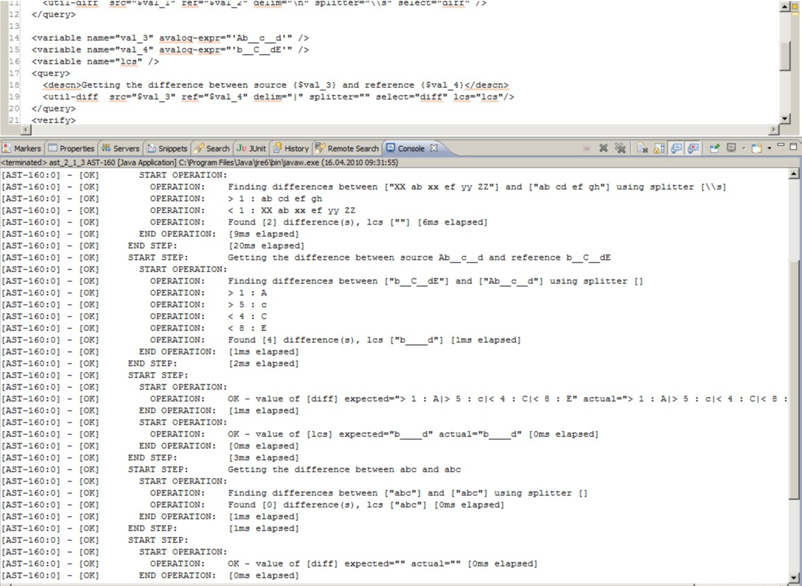
<query> | <util-diff ...> - Finds differences in large strings
| Attributes | Description |
|---|---|
| src (IN) | Source string for comparison (mandatory). |
| ref (IN) | Reference string to compare against (mandatory). |
| select (OUT) | Variable that will be filled with all the differences between the two given strings. |
| lcs (IN) | Variable that will be filled with the longest common subsequence of the two given strings. |
| delim (IN) | The comparison identifies multiple differences. These differences are concatenated with this delimiter before they are returned. |
| splitter (IN) | Pattern to split the two input values into pieces for piecewise comparison. Defaults to the newline character, that is by default a line wise comparison is done. |
| descn (IN) | Description |
| regex (IN) | A flag when set to true, compares src and ref to check if equal; if not, it will then check if a regular expression is present in the line of ref and will match the pattern against the current line of src. The default is false. |
Example
<query>
<util-diff src="$val_5" ref="$val_6" delim="\n" splitter="" select="diff" lcs="lcs" />
</query>
Example: Two strings are compared
- Source: "b__C__dE"
- Reference: "Ab__c__d"
- Splitter "" (Empty string resulting in comparison by character)
The result is four differences and the longest common subsequence is:
"b____d".
Query replace
The util-replace operation allows to replace certain key words in a string or a variable with different values.
<query> | <util-replace ...> - Replace key words with values
| Attributes | Description |
|---|---|
| src (IN) | Source string for replacement (mandatory). |
| select (OUT) | Variable that will be filled with the replaced content of src. The same variable can be used for src and select. |
| replacement (IN) | Contains attributes key and value. |
| key (IN) | Contains a string from src that is to be replaced with value. |
| value (IN) | Contains a string to replace key. |
| descn (IN) | Description |
Example
<query>
<util-replace src="{$text}" select="text" descn="REPLACE MSG">
<replacement key="[val_date]" value="$l_date" />
<replacement key="[amount]" value="$l_amt" />
</util-replace>
</query>
Query latest-order
The latest-order operation fetches and displays the latest Avaloq orders in AST.
<query> | <latest-order ...> - Display values of latest orders in avaloq.
| Attributes | Description |
|---|---|
| limit (IN) | Limit number of items to shown in Avaloq orders. Default value is 20. |
| select (OUT) | An AST Variable to specify and save the output operation. |
Example
<query>
<latest-order limit="10" select="text" descn="LATESTORDER TEST" />
</query>
Query order-generation
The order-generation operation allows to generate a template for an AST test based on an existing order id.
<query> | <order-generation ...> - Generate a template test XML to re-create an Avaloq order.
| Attributes | Description |
|---|---|
| id (IN) | AST expression to specify the Avaloq order ID to be scanned to generate the AST test template. |
| descn (IN) | Description of this operation instance. |
| validate (IN) | Boolean to specify if AST should try to automatically trim down the test through a strict validation. Depending on the complexity of the order, this may results in a failure. Defaults to false. |
| output-xml (OUT) | The name of the generated AST test template XML that will be saved upon completion. |
Example
<query>
<order-generation id="100000015324" output-xml="generated-test.xml" descn="generating atest template for 00000015324" />
</query>
Verify operations
Verify operations are used to test for specific conditions and report successes or failures to the AST framework.
This section details the different types of verification you can perform.
Verify value operation
The verify value operation allows to test the value of a variable or an avaloq-expression against an expected value. The comparison strategy is as follows (this hierarchy is not adaptable):
- The two values are treated as numbers and compared (with a tolerated deviation of 1.00\times 10-8).
- The two values are treated as strings and are compared character after character.
- The expected value is treated as a regular expression. AST tests whether the actual value satisfies the given regularexpression pattern.
The content specified in the select attribute can also be verified against an XML schema.
<verify> | <value ...> - Compares a value against another one
| Attributes | Description |
|---|---|
| select (IN) | Variable to be verified. |
| avaloq-expr (IN) | The value to be verified is determined by an avaloqexpression. |
| script-expr (IN) | The value to be verified is determined by a JavaScriptexpression |
| value (IN) | Value to be verified against (expected value). Possibly a regular expression pattern. |
| schema (IN) | URI to XML schema. The URI can describe a path to alocal file or a web location (http://...). |
| raise-msg (IN) | Raises a customized error message. |
Example code 1
<verify>
<descn>Verify that a variable contains a number</descn>
<value select="xfer_doc_id" value="[0-9][0-9]*" />
</verify>
Example code 2
<verify>
<descn>Verify that an avaloq-expression equals thespecified number</descn>
value avaloq-expr="session.bu_id" value="6"/>
</verify>
Example code 3
<verify>
<descn>Validate xmlContent against a schema</descn>
<value select="$xml_content" schema="testcase.xsd" />
</verify>
Verify booking operation
The AST tool can verify financial bookings made by an Avaloq order. To identify a specific booking item, you can use one of the following methods:
- Position ID: Use the position's ID, which can be any type of position.
- Money Account: Use any key to identify a specific money account.
- Combined Elements: Use a combination of a container, currency (curry), and an optional recon lot type.
This booking operation ensures that the asynchronous Avaloq booking engine is completely up-to-date, preventing any retrieval of outdated or "stale" information. The verification process is independent of the booking's status, so you can test both temporary and verified bookings. Additionally, you can use the optional event status parameter to specifically check for temporary or reversed (storno) bookings.
<verify> | <booking ...> - Verifies a booking performed by an order on a position or money account
| Attributes | Description |
|---|---|
| doc (IN) | Id of order to be verified (mandatory). |
| pos (IN) | Position on which the verification is done. |
| macc (IN) | Money account on which the verification is done. |
| cont (IN) | Container on which the verification is done. |
| curry (IN) | Currency of the defined container (required whenparameter container is given). |
| qty (IN) | Quantity to be verified (mandatory). |
| recon_lot_type (IN) | Recon lot type (optional). |
| evt-status (IN) | Event Status of the Booking to be verified (optional). |
| book_kind (IN) | Book kind of the booking (optional). Allows to identify different bookings on the same position. A typical usage is to get access to different cost bookings on the same profit/loss account. |
Example
<verify>
<descn>Check pay bookings on client, cost and ZV.CRED</descn>
<booking doc="$pay" macc="10001401.2003" qty="-129.45" />
<booking doc="$pay" cont="412.20.00.50" curry="CHF" qty="6" />
<booking doc="$pay" cont="ZV.KRED" curry="CHF" recon_lot_type="10" qty="123.45" />
</verify>
Verify message operation
The message verify operation allows you to check the content of a given message—whether incoming or outgoing—against an expected value. AST uses a specific strategy to perform this check.
- XPath Evaluation: If the XPATH parameter is specified, the message is treated as an XML message, and the result of the XPath query is evaluated and checked against the expected value.
- Tag Verification: For messages formatted by external regulators like SIC, EuroSIC, SWIFT, or SECOM, AST can verify the presence of expected tags and their corresponding values. This lets you test specific tags while ignoring others that aren't relevant to the comparison.
- String Comparison: The two messages are compared as literal strings, character by character.
- Regular Expression: AST can also treat the expected value as a regular expression, and then test whether the actual message content satisfies that pattern.
<verify ... > | <msg ...> - Verifies the content of a message
| Attributes | Description |
|---|---|
| id (IN) | Id of the message |
| Expected (IN) | Expected content of the message. Can either be the full expected content, a regular expression that is to be satisfied or a subset of (SIC, EuroSIC, SWIFT or SECOM) tags and values that must appear in the actual message. |
| Xpath (IN) | For XNK messages an XPATH expression can be set. The evaluated location is tested against the expected attribute. |
Verify compare-pdfs operation
Differences between two PDF files can be checked using the compare pdfs verify operation. The pdf pages are converted to images with 50 pixel/in. The comparison strategy is as follows:
- One source and one target attribute must be given.
- Only one source and only one target may be given.
- In case of load by id, the operation fetches the directory and name of the file in the database and converts it to bytes for comparison.
- In case of load by path, the operation finds the file given the absolute or relative path directory and its file name. File should be a PDF-file.
- Combination of id and path is possible. (e.g. source-id and target-path, source-path and target-id)
- If either of source or target PDF files does not exist or could not be loaded, comparison will fail.
- Comparison between two PDF files will be by pixel and if it exceeds the maximum page pixel errors, the operation returns a failure.
- It's possible to use sub-tags
<page ...>in the<compare-pdfs>tags to be able to define which pages will be compared. - If no
<page>is present, it works like before, all pages compared. - If "save-screenshot-to" attribute is present, it will save the result image base on the declaration value with or without file extension .png.
<verify ...> | <compare-pdfs ...> - Compares two PDF files
| Attributes | Description |
|---|---|
| *source-id (IN) | Source id |
| source-path (IN) | Directory and filename of the source PDF file |
| target-id (IN) | Target id |
| target-path (IN) | Directory and filename of the target PDF file |
| max-page-pixel-errors (IN) | The maximum page pixel errors that is valid. Default is 0. |
| difference-screenshot (IN) | Valid values are "onerror" (default) and "always". Saving a screenshot of the comparison to the output folder on error or always. "onerror": Everytime the maximum page pixel errors have been exceeded for each page in the PDF file, or "always". |
| save-screenshot-to (IN) | Save the generated screenshot of image based on the declared value of attribute with or without file extension .png. |
Example
<verify>
<descn>Verify if pdf1.pdf is same with pdf2.pdf</descn>
<compare-pdfs source-path="c:/users/test/document/pdf1.pdf" target-id="611850" max-page-pixels-errors="5" difference-screenshot="onerror" save-screenshot-to="testcases/asset" />
</verify>
<compare-pdfs ...> | <page ...> - Sub tag of compare-pdfs tag that allows definition of pages to be compared
| Attributes | Description |
|---|---|
| numbers (IN) | Page number/s to be tested. It can contain a comma separated list of numbers or an "*" for all pages (that can be overriden for some specific cases with other entries below it) |
| x (IN) | Initial x coord of the portion to be tested for that page. Default is 0. It can be set to a percentage. (e.g. x="/23" means 23%) |
| y (IN) | Initial y coord of the portion to be tested for that page. Default is 0. It can be set to a percentage. (e.g. x="/23"means 23%) |
| width (IN) | "full" for the complete width or width in pixels of the region to be compared. Default is "full". It can be set to a percentage. (e.g. x="/23" means 23%) |
| height (IN) | "full" for the complete width or height in pixels of the region to be compared. Default is "full". It can be set to a percentage. (e.g. x="/23" means 23%) |
| max-page-pixels-errors (IN) | Treshold for this page configuration that overrides the previous ones in the <compare-pdfs> or previous <page> tags. |
Example
<verify>
<compare-pdfs difference-screenshot="onerror" source-path="../issues/pdf/pdf_long1.pdf" target-path="../issues/pdf/pdf_long2.pdf" max-page-pixels-errors="2">
<page numbers="*" max-page-pixels-errors="2" />
<page numbers="2,3,4,5,6" y="200" x="0" max-page-pixels-errors="2" />
</compare-pdfs>
</verify>
Control Statements
Control statements are used to manage the flow of a test run and define specific settings.
Session control Statement
The session statement allows you to switch the user, business unit, and even the Avaloq instance within a single test case. This is useful for simulating "four-eye checks" or performing cross-business-unit tests in a MESI (Multi-Entity Single Instance) environment. All operations executed after a session switch respect the security and business unit restrictions of the new user.
<session ...> - Sets the current user and business unit. Instance is switched if defined.
| Attributes | Description |
|---|---|
| user (IN) | User under which the test case is executed. The user can also be an Intermediary oracle user, also named IMEDuser if Avaloq is configured to use those. |
| bu (IN) | The business unit the session should run in. Optionalparameter – when not specified the business unit remainsunchanged and only the user is switched. |
| mode (IN) |
|
| instance (IN) | Avaloq instance as defined in ast.properties (in a MEMIsetup, see restricted availability). |
Example
<!-- Connect to instance_B -->
<session user="test_user_a" bu="AAA"instance="instance_B" mode="interface">
Wait control statement
The wait statement can either halt test execution for a specified duration or suspend it until a given condition is met.
<wait ...> - Waits until a given time has passed or until a condition is satisfied.
| Attributes | Description |
|---|---|
| timeout (IN) | The amount of time to wait, in seconds. |
| avaloq-cond (IN) | Avaloq script expression that must evaluate to a boolean. The statement waits until the condition is satisfied, or a timeout occurs. For unconditional wait the attribute can be left out. |
| script-cond (IN) | Same as avaloq-cond but with a JavaScript expression. |
| raise (IN) | Boolean flag to indicate if a failure should be raised when the condition remains unsatisfied after the given time has passed. |
| raise-msg (IN) | Message that is raised. |
| signal (IN) | Wait until signal "key" is set (value is not null). See also the section about test case scenarios. Value can be a string constant or AST variable |
Example
<wait avaloq-cond="1=2" raise-msg="one was never two"timeout="5" />
<wait timeout="10" />
Controlling the flow with IF conditions
The Tag <if> ... </if> can be inserted under the testcase tag or directly under the method tag (bubble) and allows AST to evaluate a condition in Avaloq and only if this resolves to true, to execute the content of the <if>.
This content may be formed of <variable>, <input>, <query> and <verify> commands.
<if ...>- Control flow of execution and skip entire sections of tests in case condition is not satisfied.<else>- In case condition is not satisfied and<else>...</else>tag is present under the<if>tag, the operation/s under the<else>tag will be executed instead.
| Attributes | Description |
|---|---|
| avaloq-cond (IN) | The condition to be verified in order for the content to beevaluated and executed |
Example code - IF (1):
<if avaloq-cond="avaloq expression"> ... </if>
Example code - ELSE (2):
<if avaloq-cond="avaloq expression">
...
<else>
...
</else>
</if>
Controlling the flow with Select case
The Tag <select> ... </select> can be inserted under the testcase tag or directly under the method tag (bubble) and allows AST toevaluate a condition in Avaloq and only if one of its resolves is true, to execute the content of the <case> ... </case>.
This content may be formed of <variable>, <input>, <query> and <verify> commands.
<select ...> - Select allows an avaloq-expr to be tested for equlity against a list of values.
| Attributes | Description |
|---|---|
| avaloq-expr (IN) | The avaloq expresion to be verified in order for the.content to be evaluated and executed |
Example
<select avaloq-expr="avaloq expression"> ... </select>
<case ...> - Control flow of execution and skip entire sections of tests in case value is not equal to the avaloq-expr attribute of the <select> tag.
| Attributes | Description |
|---|---|
| Value (IN) | The value to be verified in order for the content to beevaluated and executed |
Example
<select avaloq-expr="avaloq expression">
<case value="...">
...
</case>
</select>
<else ...> - In case condition is not satisfied and <else> ... </else> tag is present under the <select> tag, the operation/s under the <else> tag will be executed instead.
Example
<select avaloq-expr="avaloq expression">
...
<else>
...
</else>
</select>
Setting control statement
The setting control statement allows defining parameters of the test execution.
<setting ...> - Define parameters of test execution
| Attributes | Description |
|---|---|
| Property (IN) | Name of the property to be set. The only parameter that is currently available is the application log level that is used to filter logging events. |
| Value (IN) | Value of the property. |
Example
<setting property="ast.base.log_level" value="detail" />
<setting property="ast.base.log_level" value="step" />
For-Loop control flow statement
The for-loop control statement allows the body of the tag to be executed repeatedly to know about the sequencing of each iteration.
Remark: Define the attributes that determine the number of iterations and the execution logic. The loop iterates based on the number of tokens split by the delimiter from the "select" result or the "avaloq-list" result, assigning each token to the "target" variableRef.
<for ...> - Define the attributes on how many times will iterate and execute depending on thenumber of tokens splitted by the delimeter from the "select" or result of "avaloq-list" and assign it to the "target" variableRef. Define either "select" or "avaloq-list" on how to iterate.
| Attributes | Description |
|---|---|
| select (IN) | This attirbute is a type of VariableRef containing the reference to an AST variable. |
| avaloq-list (IN) | This attribute is a type of AvqExpr containing an Avaloq scripting expression defining a list on which to iterate. Define in delim attribute which property you read for each element of the list. |
| delim (IN) | This attribute defines the type of delimeter to be use to split the content of the variable to have a loop on each token. If avaloq-list is specified, it instead defines the property of the object to be read for each element of the list. |
| target (IN) | This attirbute is a type of VariableRef with the AST variable containing the value of the single token taken from the "select" variable. |
Example
<for select="one;two;three" delim=";" target="$single_value">
...
</for>
AST currently provides one property namely ast.base.log_level. This defines the application log level. Valid values are testcase, step, operation and detail.
Methods
Definition and use of Methods
AST test script syntax supports outsourcing functionality in methods. This mechanism can be applied to implement often-used test script sub-steps in a single AST method. This helps to build re-usable AST test script steps.
Methods have to have these attributes and elements:
- Parameters: Parameters are variables used to pass values from the test script calling the method to the method itself (e.g., "A" and "B"). They are used in the same way as the elements
<argument>and<variable>. These parameters can be defined with default values and are optionally overwritten when using the method (seeinvoke-methodon how to invoke a method). - Return: Defines the value(s) to be returned.
- The name of the method must correspond with the name of the XML file.
<method name="sag/XYZ/foo">
<descn> ... </descn>
<parameter name="A" default="A_default_value" />
<parameter name="B" />
...
<return name="Name1" select="..." />
<return name="Name2" select="..." />
</method>
A method can be invoked in an AST test script or even from within another method. If a parameter is not used in the invocation, then the attribute default in the parameter definition inside the method is used. A method can have single or multiple returns by using attribute select for single return and element out for multiple returns.
The invocation of an AST Method has the following syntax:
<ivoke-method ...> - Executes a method.
| Attributes | Description |
|---|---|
| name (IN) | Name of the method (Path to method from ast-lib directory) |
| avaloq-cond/script-cond (IN) | Avaloq script condition or script condition in an other script language. |
| ignore-blank-setters (IN) | Defaults to true if not set, it will decide if empty strings should be passed as parameters or ignored. |
| select (OUT) | Return value of executed method (optional and will be ignored if out tag is present). |
| Element parameter | Description |
|---|---|
| name | Name of method parameter (must be present in the method definition) |
| value | Parameter value. |
| Element out | Description |
|---|---|
| name | Name of method output. (must be same as the return name in method) |
| select | Return value of executed method. |
<invoke-method name="sag/XYZ/foo" avaloq-cond="$var = 0">
<parameter name="A" value="$var" />
<parameter name="B" value="3" />
<out name="NameOfReturn1" select="myResultVarOut1" />
<out name="NameOfReturn2" select="myResultVarOut2" />
</invoke-method>
Example of a test case without methods
Methods offer significant value for the flow and reusability of a test case, as demonstrated in the example from section Simple test case example.
When methods are not used, a test case consists of a sequence of input statements.
Example of a test case without methods
<?xml version="1.0" encoding="UTF-8"?>
<testcase bu="AAA" name="0 - Create Address & Person" user="avaloq" version="1.0">
<!-- Local variable definition -->
<variable name="addr_doc_id" />
<!-- Create Address -->
<input>
<new-doc type="addr" init-action="1100" close-action="1090">
<set ... />
...
<out property="id" select="addr_doc_id" />
</input>
<!-- Create Person -->
<input>
<descn>Natürliche Person erfassen</descn>
<new-doc type="person" init-action="1100" close-action="1019">
<set ... />
...
<out property="id" select="person_doc_id" />
</new-doc>
</input>
...
</testcase>
Example test case using methods
For example, the generation of a Person object can be extracted into a separate, reusable method that is generally applicable and can be utilized by other test cases.
Example test case using methods
<?xml version="1.0" encoding="UTF-8"?>
<method name="CreatePerson">
<descn>Method creating a natural person</descn>
<!-- Call this method with this script.
<invoke-method name="CreatePerson" >
<parameter name ="in_addr_ID" value="$l_obj_addr_id"/>
<parameter name ="in_first_name" value="$l_first_name"/>
<parameter name ="in_middle_name" value="$l_middle_name"/>
<parameter name ="in_name" value="$l_name"/>
<parameter name ="in_sort_alpha" value="PERSON_${l_sort_alpha}"/>
<parameter name ="in_gender" value="$l_gender"/>
<parameter name ="in_lang" value="$l_lang"/>
<parameter name ="in_country_nati" value="$l_country"/>
<parameter name ="in_birthdate" value="-${l_age}"/>
<parameter name ="in_ident_type" value="ID"/>
<parameter name ="in_ident_country_id" value="$l_country"/>
<parameter name ="in_ident_nr" value="$l_ident_nr"/>
<out name="out_person_id" select="l_obj_person_id"/>
</invoke-method>
-->
<variable name="person_doc_id"/>
<parameter name ="in_addr_ID"/>
<parameter name ="in_first_name" default="Hans"/>
<parameter name ="in_middle_name" default="Martin"/>
<parameter name ="in_name" default="Schweizer"/>
<parameter name ="in_sort_alpha"/>
<parameter name ="in_gender" default="M"/>
<parameter name ="in_lang" default="G"/>
<parameter name ="in_country_nati" default="CH"/>
<parameter name ="in_birthdate" default="-42y"/>
<parameter name ="in_ident_type" default="ID"/>
<parameter name ="in_ident_country_id" default="CH"/>
<parameter name ="in_ident_nr" default="756.1993.3991.12"/>
<input>
<descn>Natürliche Person erfassen</descn>
<new-doc type="person" close-action="1019" init-action="1100">
<set property="form_id" value="917"/>
<set property="eff_date" value="today"/>
<set property="open_date" value="today"/>
<set property="person_det.person_type_id" value="person_natural"/>
<set property="person_name_list(1).first_name" value="$in_first_name"/>
<set property="person_name_list(1).middle_name" value="$in_middle_name"/>
<set property="person_name_list(1).last_name" value="$in_name"/>
<set property="sort_alpha" value="$in_sort_alpha"/>
<set property="obj_extn.person_sym" value="$in_sort_alpha"/>
<set property="gender_id" value="$in_gender"/>
<set property="lang_id" value="$in_lang"/>
<set property="person_det.country_nati_id" value="$in_country_nati"/>
<set property="birth_date" value="$in_birthdate"/>
<set property="domi_addr_id" value="$in_addr_ID"/>
<do stmt="person_ident_list.add"/>
<set property="person_ident_list(1).ident_type_id" value="$in_ident_type"/>
<set property="person_ident_list(1).issue_country_id" value="$in_ident_country_id"/>
<set property="person_ident_list(1).ident_nr" value="$in_ident_nr"/>
<out property="id" select="person_doc_id"/>
</new-doc>
</input>
<variable name="a_status_2" avaloq-expr="doc_person($person_doc_id).wfc_status_id"/>
<verify>
<descn>Verifizieren Orderstatus </descn>
<value select="a_status_2" value="90"/>
</verify>
<variable name="obj_person_id" avaloq-expr="'#'||doc_person($person_doc_id).person_id"/>
<input>
<descn> Object PersonID = {$obj_person_id} </descn>
</input>
<!-- define out parameter -->
<return name="out_person_id" select="obj_person_id"/>
</method>
Within a test case, the full code implementation can be concisely replaced by a method call. This call requires passing only the necessary parameters for execution.
It is not required to supply every possible parameter. If a parameter is omitted from the method call, the method will attempt to utilize its 'default' attribute if such an attribute has been defined. In the absence of a defined 'default' attribute, the value for that parameter remains undefined for the duration of the call.
This approach simplifies the structure of the test case and increases its readability.
<?xml version="1.0" encoding="UTF-8"?>
<testcase bu="AAA" name="0 - Create Address & Person" user="avaloq" version="1.0">
<!-- Local variable definition -->
<variable name="addr_doc_id" />
<!-- Create Address -->
<invoke-method name="CreateAddress">
...
<out name="out_addr_id" select="l_obj_addr_id"/>
</invoke-method>
<!-- Create Person -->
<invoke-method name="CreatePerson" >
<parameter name ="in_addr_ID" value="$l_obj_addr_id"/>
<parameter name ="in_first_name" value="Hans"/>
<parameter name ="in_name" value="Muster"/>
<parameter name ="in_gender" value="M"/>
<parameter name ="in_lang" value="G"/>
<parameter name ="in_country_nati" value="CH"/>
<parameter name ="in_ident_type" value="ID"/>
<parameter name ="in_ident_country_id" value="CH"/>
<parameter name ="in_ident_nr" value="756.1993.331.12"/>
<out name="out_person_id" select="l_obj_person_id"/>
</invoke-method>
...
</testcase>
Test Sets
The "Test Sets" menu on the AST Control Panel provides the organization of individual test cases into logical groups for streamlined, combined execution.
Menu has structure similar to test case repository, it is designed for efficiency, with the left side of the screen displaying a repository tree view of all available test sets. This list allows users to easily navigate and select a specific test set, such as "02_PAYMENTS" or "03_CREDIT."
Selecting an item from this tree populates the main content area with detailed information and options for that particular test set.
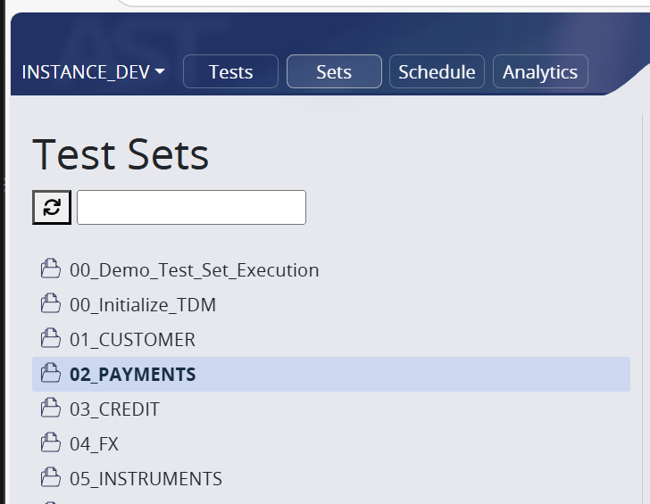
It is possible also to filter the test sets. The results are loaded whilst you type characters one by one. Use refresh button if you feel like tree isn't properly loaded.
Context menu
An important feature of this menu is the context menu, which appears when a user right-clicks on a test set in the repository tree. This menu offers several powerful actions for managing the selected set.
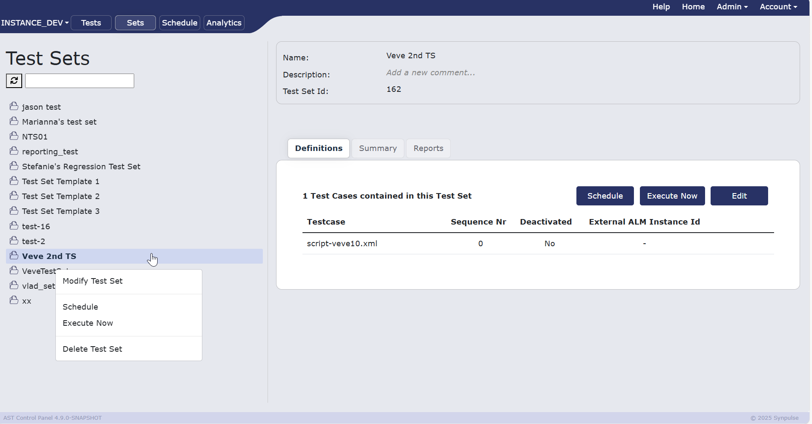
| Action | Description |
|---|---|
| Modify Test Set | Allows user to change the name |
| Schedule | Allows the user to Schedule a test case |
| Execute Now | Immediate execution of test set |
| Delete Test Set | Deletes test set |
The primary content area is divided into two key sections. At the top, a metadata panel displays the Name, Description, and unique Test Set ID. This provides quick, high-level context about the selected set. Below this, a tabbed interface further organizes the information.
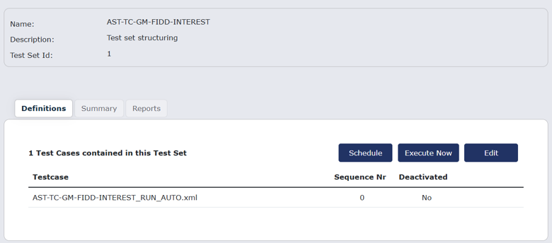
Definitions tab
The Definitions tab shown in the previous image, lists all the individual test cases included in the test set. For each test case, it displays its name, a Sequence Nr, and whether it is Deactivated. This organized table gives the user a clear view of which tests are part of the set and their execution order.
Summary tab
The Summary tab shown in image below allows us to select the instance on which selected test set was executed and date range for which we want to see the summary. Summary works as overview. For more details check reports tab.
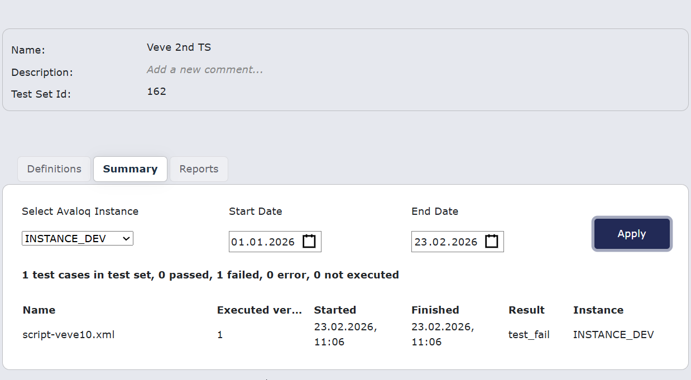
Reports tab
The Reports tab contains whole table with many fields that can be set up for different view.
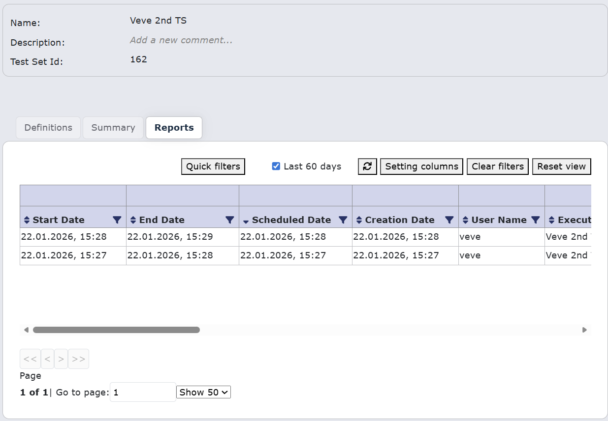
he table is designed to provide a comprehensive overview of all scheduled and executed test runs, allowing users to track the history and outcomes of their test executions effectively. The table columns organize data points to track the execution timeline and ownership. These include the Start Date, End Date, Scheduled Date, and Creation Date, allowing for tracking of initiation and completion times. Additional columns identify the User Name responsible for the run and the specific Test Set or test case that was executed. Each execution is uniquely identified by an Execution ID and has a specific Status, such as "Finished."
The table includes a summary of execution results, detailing the number of Tests: - Passed - Failed - Errored - Pending
- This numerical breakdown offers an immediate status of the execution outcome. The right-most columns provide action options, including viewing Reports and controls to Modify or Delete a scheduled run.
A separate detail window, accessed via the report action, provides a focused view of a single execution. At the top, a summary displays the total number of tests run and the breakdown of passed, failed, error, and pending results. A "Summary HTML report" button is available for a full report generation.
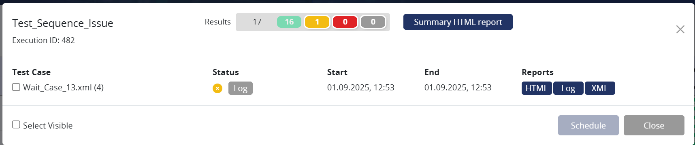
Granular execution report detail. This modal window displays the results breakdown and provides links to retrieve various report formats for in-depth analysis. For more details on the report formats, see the Reports section.
The window lists the individual Test Cases included in the run, such as "Wait_Case_13.xml (4)." For each case, the Status, Start time, and End time of its execution are listed. The final column, Reports, offers access to the execution data for that specific test case in three distinct formats: HTML, Log, and XML. This allows for granular review and data integration. The bottom of the window provides controls to Schedule the test run again or Close the report window.
Test set creation and alterations
Add new test set
To create test set you have to select one or more test cases in 'Tests' tab or select folder, right click the selected item and choose from context menu to 'Create new test set', You can create also test set from existing folder with test cases.
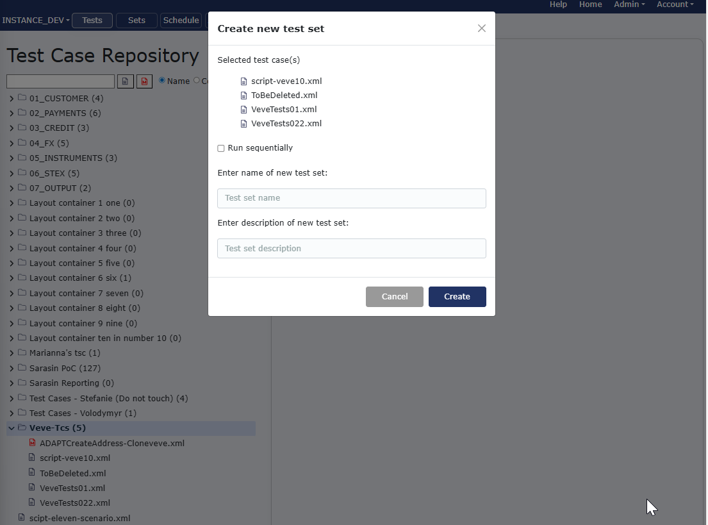
Add test cases to already existing test set
There is also option to add test cases to already existing test set. Right click the test case or select multiple test cases you want to add and choose from context menu 'Add tests to existing test set.' In drop down you can select one of existing sets that will be altered with this action.
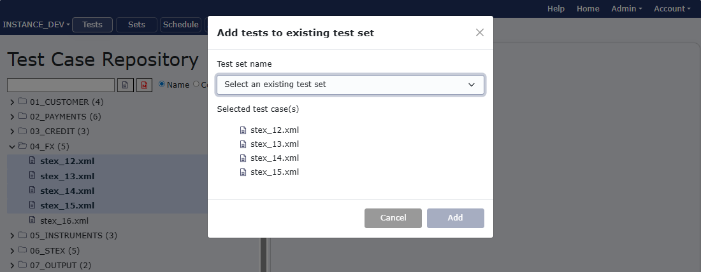
There is always list of test cases that will be part of you future set and name and description. All of these can be also changed later in sets tab.
Scheduling and Executing Test Sets
If you want to execute test set immediately, you can select 'Execute now' from context menu. This will run the test set on selected instance and show results in reports tab.
When clicking on the Schedule button a dialog will appear, allowing you to set up the parameters for scheduling the execution of the test set. You can select the specific test set and instance on which it will run, as well as the scheduled date and time for execution. Additionally, there are options to configure recurrence if you want the test set to run on a regular basis.
The interface consists of a detailed, scrollable table that functions as the central log for both scheduled and completed test runs, structured to provide a comprehensive record of execution history.
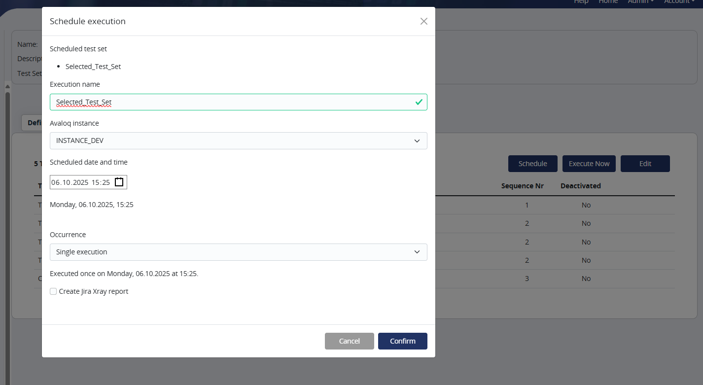
You will be able to see the scheduled execution in the table in the Schedule tab.
Schedule tab contains all scheduled runs, executed runs and currently executed runs with all their details. It is the main place to monitor and manage test execution.
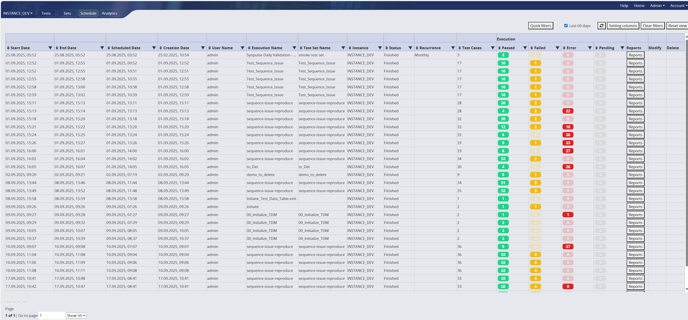
List of columns with explanations
| Column | Description |
|---|---|
| Start date | Starting date of a run |
| End date | Ending date of a run |
| Scheduled date | Scheduled date of a run |
| Creation date | Creation date of a run |
| User name | User name that created the set / test case |
| Execution name | User name that executed the run |
| Test set name date | Creation date of test set name |
| Instance | Instance where tests are executed |
| Status | Status of the execution |
| Recurrence | Is the run going to be reocurring? |
| Test cases | Number of test cases |
| AST executor | |
| External Xray | |
| Passed | Number of passed tests from test set |
| Failed | Number of failed tests from test set |
| Error | Number of erroneous tests from test set |
| Pending | Number of not yet executed tests from test set |
| Xray sync status | |
| ALM sync status date | |
| Reports | Clickable button navigating us to reports |
| Modify | Action available only for not yet processed runs. To modify the set. |
| Delete | Action available only for not yet processed runs. To modify the set. |
This table can be altered by adding or removing mentioned columns via clicking the 'setting columns' button. This will open a pop-up with all columns to be selected or unselected as checkboxes. The table can be set to its default view by clicking on 'reset view' button.
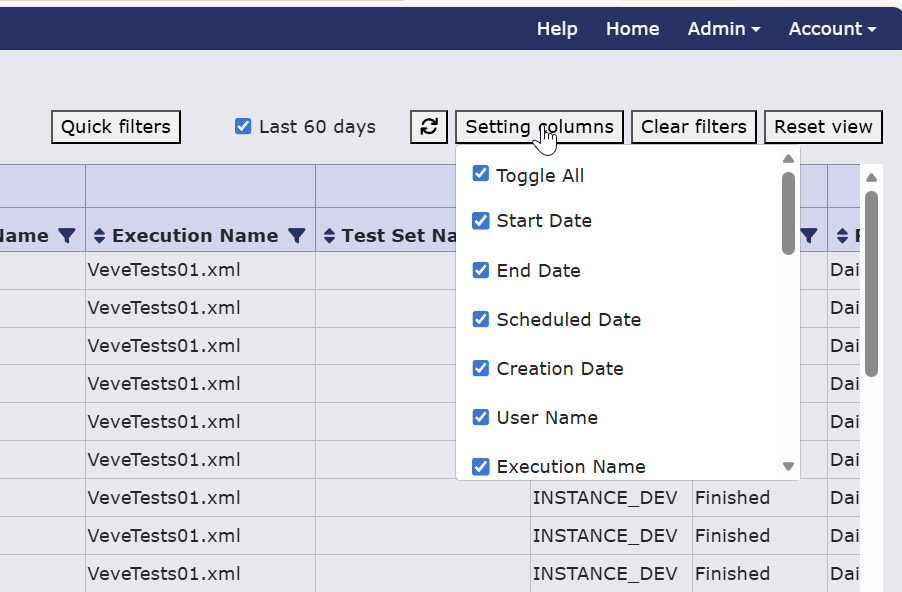
Quick filter also allows us to display data only from selected time period

Filtering can be done also in column header clicking on the funnel icon to further specify data you want to display. When a filter is set on a column the funnel icon is red. To clear these settings there are 'clear filters' button, or you can click on the funnel icon again and clear filters from there. You can also sort the data in the column in ascending or descending order by clicking on the arrow icons in the left of the column header. To clear sorting click on the arrow icons again until both appear.
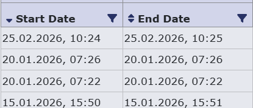
Clicking on the report button will show the same functionality as shown in the Test set reports tab.
Analytics
The "Analytics" menu provides access to reporting functionalities.
The structure is based on a navigation pane on the left and a content area on the right.
The left navigation pane categorizes the available reports. Currently, the primary category is "1. Testcase-related," under which the specific report option is listed.
Execution Reporting
After a test case has been executed, a user can access its detailed report. This report offers three different viewing formats to accommodate various user needs and external tools: HTML for a user-friendly, web-based view; Log for a detailed, step-by-step text record; and XML for a structured data format suitable for parsing by other applications. This flexibility ensures that the results can be easily reviewed and integrated into other systems.
Reports to download
1.Historical execution data Select the date you want to recieve data from and click download. Report in csv format will be donwloaded to you machine
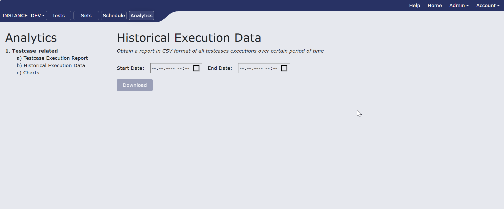
2.Testcase execution report To obtain a report in CSV format of all testcases with their latest execution results, click download.
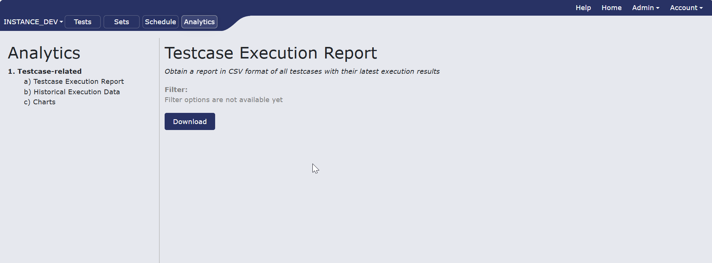
Reports
When you execute test cases with the AST tool, it automatically collects information about the test run and provides it to you through two main output channels: the AST Log and a XML Report.
AST Log
The AST log provides real-time feedback on the test run as it happens.
- Console Output: The log is displayed directly "on the go" in the console. This is useful for monitoring the progress of your tests in real time.
The XML Report
Info
Upon completion of the test run, AST generates a single, comprehensive XML file that summarizes the entire test run.
This report is the foundation for creating other report types.
-
Primary Report Format: The XML file is the primary output format. It's designed to be machine-readable, making it easy to use as a data source.
-
Generating Other Reports: You can use this XML report to generate various other report formats, such as HTML, Excel, or custom reports tailored to your specific needs.
Report Formats and Generation (HTML, XML, Excel)
XML Report
Info
The AST test automation tool generates a detailed XML report for every test run.
This report, which is the central source of information about a test's execution, is defined by the out.xsd schema file.
HTML report
Info
The HTML report provides a user-friendly, web-based view of your test execution results.
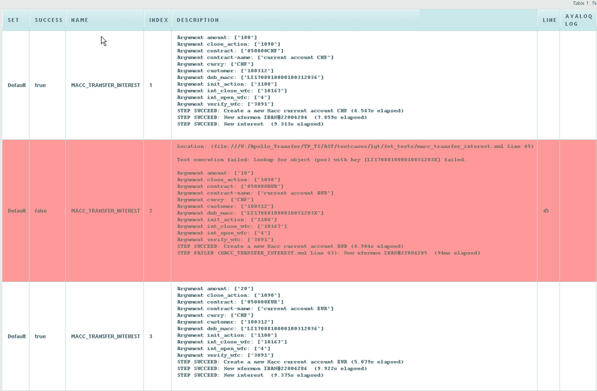
It is generated automatically from the master XML report after the test run is complete.
Key Features
- User-Friendly Format: The HTML format offers a clear, web-based display of test results, making it easy to review the success and failure of test steps.
- Source Generation: The HTML report is generated from the comprehensive XML report using an XSL Transformation (XSLT).
Configuration
The specific style and content of the HTML report are controlled by a stylesheet defined in your AST property file (ast.properties):
| Property Name | Example Value | Description |
|---|---|---|
| ast.report.xslt | report_summary.xsl | Specifies the path and name of the XSLT file used to transform the XML report into the final HTML output. |
By modifying the referenced XSLT file, you can customize the appearance and level of detail presented in the final HTML report.
Excel Report
The Excel report is generated from an XML test run file using XPath expressions embedded inside the Excel template.
Each sheet in the template contains expressions that extract data from the XML and populate the report.
The expressions are evaluated by the AST report generator when creating the Excel report.
For more information, see the Excel Report Template section.
Viewing Execution Reports
Info
The AST Control Panel provides several methods for reviewing the results and logs of executed tests, both through the graphical interface and via the REST API.
Accessing Reports in the Control Panel
You can view reports at three levels of detail: Execution, Test Set, and Individual Test Case.
The Schedule (Execution) View
The Schedule menu functions as the central log for all test activity, showing the status of both scheduled and completed runs.
- Execution Grid: The main table displays key metadata for every run, including the Start Date, End Date, User Name, and the current Status.
- Execution Results Summary: This summary details the total number of tests that Passed, Failed, Errored, and are Pending.
- Detailed Execution Report Window: Clicking the Report action in the grid opens a separate detail window showing the results for that entire run.
- This window lists every Test Case included in the run, its Status, Start and End times.
- It offers a Summary HTML Report button for a full-run overview.
Test Case Repository (Individual Test Case)
You can view the latest report for an individual test case directly from the Test Case Repository.
- Status Bubble: Clicking on the colored status bubble next to a test case opens its execution report.
- Report Formats: Reports for individual test cases are available in three distinct formats for review and export:
Info
The Analytics menu also provides the ability to export a CSV reports. See the Analytics documentation for details.
Customizing Reports
You can customize the content and format of Excel reports by using an Excel template and embedding XPATH expressions. When a test run is complete, AST enriches your template by replacing cell contents with data pulled directly from the XML Report using these expressions.
Configuration and Templates
The process relies on defining the necessary files in your configuration:
- XML Report: This is the base data source generated after every test run. The Excel customization process uses data from this file.
- Excel Template: This is the Excel file (.xls or .xlsx) you design with your desired layout.
- HTML Template: This is the html you can design with your desired layout.
The template files can be uploaded in Configuration section. Admin role is required to upload these files
Excel template and XPATH expressions
The Excel template supports three expression formats:
1. Single Value Expression
[xpath]
[testrun/@status]
This returns a single value from the XML and writes it into the cell.
<testrun status="ok">
ok
2. Multi-value Expression
[[xpath]]
[[//testcase/@status]]
This returns all matching nodes and writes them vertically into the column.
<testcases>
<testcase status="ok"/>
<testcase status="ok"/>
<testcase status="error"/>
</testcases>
ok
ok
error
Each value is written into a new row.
3. Row-based Expression
[[[nodeset_xpath;relative_xpath]]]
[[[//testcase;@status]]]
Meaning of the example:
- Select all nodes using
testcase - For each selected node evaluate
status - Write results row-by-row in the sheet
Test Cases Sheet
The Test Cases sheet contains all executed test cases.
Default expressions used in the template:
| Column | Expression |
|---|---|
| Status | [[//testcase/arguments/argument[@name="TESTCASE_ID"]/../../@status]] |
| Test Case ID | [[//testcase/arguments/argument[@name="TESTCASE_ID"]/@value]] |
| Description | [[//testcase/arguments/argument[@name="DESCRIPTION"]/@value]] |
| Test Script | [[//testcase/arguments/argument[@name="TESTCASE_ID"]/../../testscript]] |
| Test Data | [[//testcase/arguments/argument[@name="TESTCASE_ID"]/../../testdata]] |
| Data Index | [[//testcase/arguments/argument[@name="TESTCASE_ID"]/../../index]] |
Rows are generated from the testcase nodes in the XML.
Important
Expressions that depend on optional fields may behave differently.
For example:
[[//testcase/arguments/argument[@name="TESTCASE_ID"]/@value]]
This expression only returns nodes that contain TESTCASE_ID.
If some testcases do not contain this argument, those rows will not appear in the result.
Alternative Pattern
To ensure that all testcases appear in the report, rows should always be anchored on the testcase node.
Other fields can then extract values relative to that testcase.
Example:
| Column | Expression |
|---|---|
| Status | [[//testcase[@status="ok"]/@status]] |
| Test Case ID | [[//testcase/arguments/argument[@name="TESTCASE_ID"]/@value]] |
| Description | [[//testcase/arguments/argument[@name="DESCRIPTION"]/@value]] |
| Test Script | [[//testcase[@status="ok"]/testscript]] |
| Test Data | [[//testcase[@status="ok"]/testdata]] |
| Data Index | [[//testcase[@status="ok"]/index]] |
Typical AST XML structure:
<testrun>
<testcases>
<testcase status="ok" name="TEST_A">
<arguments>
<argument name="TESTCASE_ID" value="TEST_A_1"/>
</arguments>
<testscript>test_a.xml</testscript>
<testdata>data.xls</testdata>
<index>0</index>
</testcase>
</testcases>
</testrun>
Frequently used terms and metatypes
Glossary of Terms
| Term | Definition |
|---|---|
| AFP GUI | The Avaloq Front Platform Graphical User Interface (web interface) that AST can test for expected interaction. |
| AMI | Avaloq Messaging Interface. AST uses this interface to send and process messages, simulating an external system and bypassing the Avaloq MQ Bridge. |
| Annotations | XML elements used to define meta information for test cases, such as categorization and labeling (e.g., "Stage", "Kind", "Domain"). They do not affect execution but are included in reports. |
| Arguments | Placeholders in an XML test script that correspond to column names in an external data sheet (e.g., Excel). They are populated with test data at runtime and behave identically to variables. |
| AST Core (Testing Module) | The test execution engine component of the AST Suite responsible for running test cases, verifying results, and generating reports. |
| AST Control Panel | The user-friendly web interface component of the AST Suite for managing test cases, scheduling executions, viewing analytics, and administering users. |
| AST Expression (AstExpr) | A type that can use a static string or a combination of multiple variables ({$var_name}) and static text. Variables are replaced with their runtime string values and concatenated with the static text. |
| AST Suite | The comprehensive platform consisting of two main components: the AST Core (the execution engine) and the AST Control Panel (the web interface). |
| Avaloq Open Interface | The standard interfaces (DDIC, Report Writer, AMI, etc.) used by AST to connect to and communicate with the Avaloq Banking System. |
| AvqExpr (Avaloq Expression) | An expression used in the AST test XML to define an Avaloq scripting expression. It dynamically substitutes prefixed variables ($var_name) with their runtime values (removing any leading #) before the script is executed by the Avaloq connection. |
| Control Statements | Tags used to manage the flow of a test run or define specific settings, such as <if>, <select>, <wait>, and <session>. |
| Coverage Analysis | An automated process executed and reported for every test run to measure the extent of test coverage. |
<debug> |
An XML tag used to display a customizable text message or the current value of one or more variables ({$variableName}) in the log for troubleshooting, but only if the system setting ast.base.debug is set to true. |
| DDIC | Data Dictionary. It defines the properties and fields of business types, which AST uses to set properties in operations like <new-doc>. |
<doc> |
An XML Operation used to process an existing order by identifying the specific order (by its ID or key) and executing a specified workflow action. |
| Execution ID | A unique identifier generated by the AST Control Panel that tracks a single test run or scheduled execution across its entire lifecycle, particularly when interfacing via REST APIs. |
| Input Operations | A category of functional elements (operations) used to modify the test object (the Avaloq system) by performing actions such as creating an order (new-doc), processing a file, or executing a task. |
| Input Step | A high-level Test Step that logically groups Input Operations (e.g., <new-doc>, <file>) used to modify the state of the Avaloq Banking System or the test object. |
| Methods | Reusable blocks of test script functionality often used to implement common sub-steps. They are stored in separate XML files and can be invoked using the <invoke-method> tag. |
<new-doc> |
An XML Operation used to create a new order in the Avaloq Banking System, supporting all interactions a user would perform in the graphical user interface. It requires an initial workflow action (init-action) and a closing workflow action (close-action). |
| Operation | The basic functional element that corresponds to a base functionality of the Avaloq Banking System. Operations are grouped to form a Test Step. |
| Query Operations | A category of functional elements (operations) used to perform read-only access to retrieve information from the test object, such as checking the status of an object, order, or message. |
| Query Step | A high-level Test Step that logically groups Query Operations (e.g., <obj>, <doc>) used for read-only access to retrieve information from the Avaloq system. |
| Scenarios | XML-based containers that define groups of test cases and their execution dependencies. They enable test flows where one test case utilizes the results of a preceding one. |
| Scriptlets | A parameter within <doc> and <new-doc> operations that allows the direct integration of Avaloq Script code into the order generation process. |
| Test Case | A comprehensive Avaloq business case defined in XML format to be tested automatically. It consists of one or more sequential Test Steps (Input, Query, Verify). |
| Test Data | The business-specific values used to drive a test case. It's rigidly separated from the Test Logic and typically defined by business users in Excel files. |
| Test Script / Test Logic | The implementation of the business case logic, defined by specialists using the XML-based Test Script Syntax. It is rigidly separated from Test Data. |
| Test Set | A logical group or suite used to organize multiple test cases for streamlined execution. They are managed via the Sets menu in the AST Control Panel. |
| Test Step | The fundamental middle layer in the test execution hierarchy, organizing a sequence of Operations. The primary categories are Input, Query, and Verify. |
| Variables | Elements defined using the <variable> tag that allow information (values) to be shared and passed between different operations and steps within a single test case. |
| Verify Operations | A category of functional elements (operations) used to test for specific conditions, such as comparing values, checking financial bookings, and verifying message content. The outcome is reported as either a success or a failure. |
| XML-based Test Script Syntax | The simple, proprietary language used by specialists to define the Test Logic (scripts) for the AST Core. |
Frequently used metatypes
| Business Categorization | INTL_ID | USER_ID | NAME |
|---|---|---|---|
| Accounting | accpay | ACCPAY | Accounts Payable |
| Accounting | accswit | ACCSWIT | Account Switch |
| Accounting | bcf | BCF | Balance Carryforward |
| Accounting | coa | COA | Cost Accounting |
| Accounting | daccr | DACCR | Depreciation and Accrual |
| Accounting | hdg | HDG | Hedge Accounting |
| Accounting | ledger | LEDGER | Ledger Transfer |
| Accounting | reconcm | RECONCM | Reconciliation confirmation message |
| Accounting | valadj | VALADJ | Value Adjust |
| Assets | asset | ASSET | Asset |
| Assets | bimtn | BIMTN | Bank Issued Medium Term Note |
| Assets | cpn | CPN | Coupon |
| Assets | fia | FIA | Fixed Asset |
| Assets | fra | FRA | Forward Rate Agreement |
| Assets | fxopt | FXOPT | Forex OTC Option |
| Assets | fxsw | FXSW | FX Swap |
| Assets | guarcred | GUARCRED | Guarantee Credit |
| Assets | irs | IRS | Interest Rate Swap |
| Assets | md | MD | Market Data Object |
| Assets | oofx | OOFX | OTC Option Forex |
| Assets | ooot | OOOT | OTC Option on Securities |
| Assets | othsec | OTHSEC | Other Security |
| Assets | otcopt | OTCOPT | OTC Option |
| Assets | prod | PROD | Product |
| Assets | prod_set_instn | PROD_SET_INSTN | Product Set Instantiation |
| Assets | repo | REPO | Repurchase Agreement |
| Assets | repoc | REPOC | Repo Contract |
| Assets | sdbc | SDBC | Safe Deposit Box Contract |
| Assets | trs | TRS | Total Return Swap |
| Avaloq User | user | USER | User |
| Corporate Actions | secevt2 | SECEVT2 | Security Event |
| Corporate Actions | sectrx2 | SECTRX2 | Security Event Transaction |
| CRM and Sales | salesopp | SALESOPP | Sales Opportunity |
| Customer Static Data | addr | ADDR | Address |
| Customer Static Data | bp | BP | Business Partner |
| Customer Static Data | person | PERSON | Person |
| Customer Static Data | person_mass | PERSON_MASS | Person Mass |
| Discrecionary Contract | ips | IPS | Investment Policy Statement |
| Discrecionary Contract | mpf | MPF | Model Portfolio |
| Discrecionary Contract | rebalm | REBALM | Rebalancer Master |
| Discrecionary Contract | rebalp | REBALP | Rebalancer Investment Proposition |
| Discrecionary Contract | rebals | REBALS | Rebalancer Order |
| Fee contracts | feecr | FEECR | Retrocession Fee Contract |
| Fee contracts | feect | FEECT | Trailer Fee Contract |
| Fee contracts | feep | FEEP | Fee Profile |
| Intermediary Static Data | imed | IMED | Intermediary |
| Loan | credappl | CREDAPPL | Credit Application |
| Loan | homefina | HOMEFINA | Home Financing |
| Loan | homefina_propos | HOMEFINA_PROPOS | Home Financing Proposition |
| Loan | loan | LOAN | Loan |
| Loan / Credit | realsec | REALSEC | Real Security |
| Loan / Credit | realty | REALTY | Realty |
| Output | docm | DOCM | Document |
| Output | letter | LETTER | Letter |
| Portfolio | aa | AA | Asset Allocation |
| Portfolio | cont | CONT | Container |
| Portfolio | contr | CONTR | Money Market & Fiduciaries |
| Portfolio | dcd | DCD | Dual Currency Deposit |
| Portfolio | dd | DD | Direct Debit |
| Portfolio | fidd | FIDD | Fiduciary Deposit |
| Portfolio: Assets | clta | CLTA | Collateral Agreement |
| Portfolio: Assets | cmngt | CMNGT | Collateral Management |
| Portfolio: Payments | card | CARD | Card |
| Portfolio: Payments | chqbkprf | CHQBKPRF | Cheque Book Profile |
| Portfolio: Payments | lihi | LIHI | Limit Hierarchy |
| Portfolio: Payments | limit | LIMIT | Limit |
| Portfolio: Payments | macc | MACC | Money Account |
| Real Estate Appraisal | iazi | IAZI | IAZI |
| Real Estate Appraisal | wup | WUP | W‘st & Partner |
| Securities Borrowing and Lending | slba | SLBA | SLB Agreement |
| Securities Borrowing and Lending | slbc | SLBC | SLB Contract |
| Securities Borrowing and Lending | slbp | SLBP | SLB Participation |
| Securities Borrowing and Lending | slbx | SLBX | SLB Commission |
| Transaction Order | adlv | ADLV | Asset Delivery |
| Transaction Order | bulk | BULK | Bulk Order |
| Transaction Order | cardtrx | CARDTRX | Card Transaction |
| Transaction Order | cds | CDS | Credit Default Swap |
| Transaction Order | chqprc | CHQPRC | Cheque Processing |
| Transaction Order | cltm | CLTM | Collateral Movement |
| Transaction Order | cmvt | CMVT | Collateral Movement |
| Transaction Order | cop | COP | Cashier Operations |
| Transaction Order | cord | CORD | Collective Order |
| Transaction Order | fxtr | FXTR | FX Trade |
| Transaction Order | inpay | INPAY | Incoming Payment |
| Transaction Order | mass | MASS | Mass Entry |
| Transaction Order | mass_settle | MASS_SETTLE | Mass Settlement |
| Transaction Order | pay | PAY | Payment |
| Transaction Order | settle | SETTLE | Settlement |
| Transaction Order | stex | STEX | Stock Exchange |
| Transaction Order | xfer | XFER | Transfer |
| Transaction Order | xferfee | XFERFEE | Fee Transfer |
| Transaction Order | xfermon | XFERMON | Money Transfer |
Integration guide
Integration guide
This sections provides information on how to integrate with various tools. For example ALM or Xray. You can also find information on how to set up SSO with Keycloak in this section. Each integration has its own documentation page where you can find detailed instructions on how to set up the integration and use it.
The instructions on how to deploy the app and also the app requirements are also provided in this section.
You can use the sidebar on the left for navigation or use the tiles below to navigate to the respective documentation page.
HP ALM
Guide for ALM setup and navigation
See section →
Jira Xray
Guide for Xary setup and navigation
See section →
Keycloak
Setup SSO with Keycloak
See section →
Deployment
Guide on how to deploy the app
Learn more →
Security
Overview of app security
See section →
System requirements
Brief summary of requirements
See requirements →
HP ALM
This chapter provides instructions for integrating HP ALM with the AST Control Panel. You will learn the necessary configuration steps, how to link test cases to external ALM IDs, map ALM instance IDs, and view the synchronization status for executed tests.
ALM Configuration
To enable HP ALM integration, an administrator must navigate to the configuration panel in the AST Control Panel and perform the following steps:
- Enable Integration: Ensure that
ast-control-panel.integration.alm.enabledis set totrue. 2.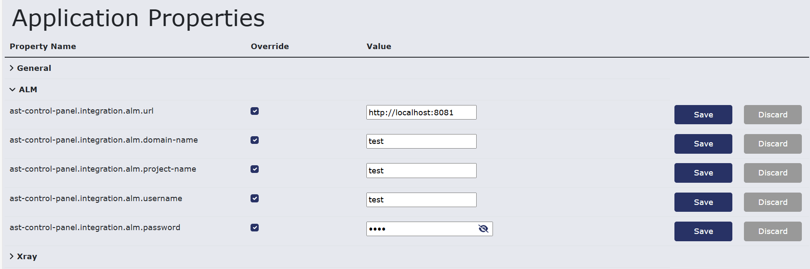
ast-control-panel.integration.alm.enabled setting activated for ALM integration.- Enter Connection Details: Input the required ALM configuration parameters, including the URL, domain, project name, username, and password .
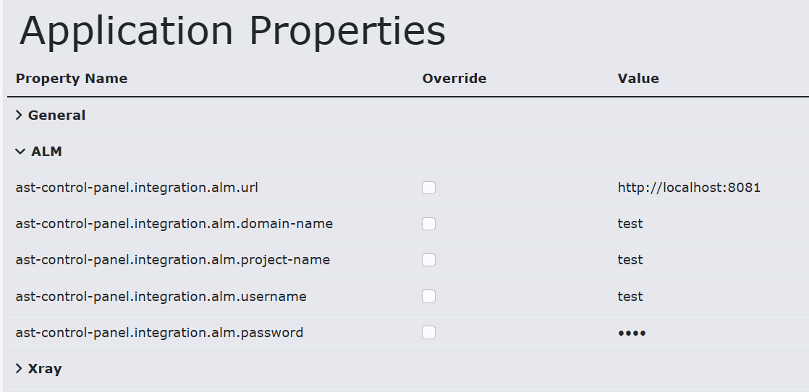
Info
When setting the URL use the URL without the qcbin part.
Setting Environment Variables(Optional)
The ALM session and login(authentication) endpoint can be changed by setting the environment variables AST_CONTROL_PANEL_ALM_SESSION_ENDPOINT and AST_CONTROL_PANEL_ALM_LOGIN_ENDPOINT.
By default, the session endpoint is set to /qcbin/rest/site-session and the login endpoint is set to /qcbin/authentication-point/alm-authenticate.
If your ALM instance uses different endpoints, you can set these environment variables accordingly. On how to set environment variables please refer to the Setting environment variables documentation.
Assigning External ALM IDs to Test Cases
To link AST test cases to corresponding test entities in HP ALM, you must assign an External HP ALM ID.
- Individual Assignment:
- Go to the 'Tests' tab and click on a specific test case.
- The test case details view will open, showing a field where you can assign or edit the 'External HP ALM ID').
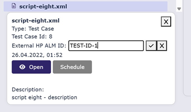
- Bulk Assignment (CSV Upload):
- Right-click on a test case in the repository tree to open the context menu.
- Select 'Manage External IDs'.
- This opens a dialog allowing you to upload the mappings via a CSV file. The CSV file must contain the AST Test Case ID, the External Hp Alm ID, and optionally, ALM Instance Ids.
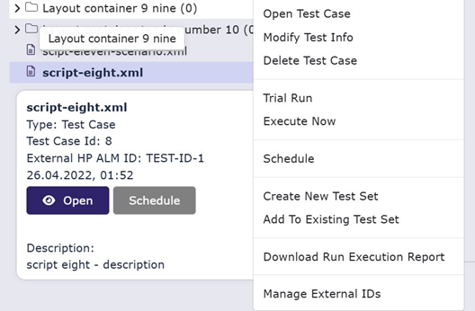
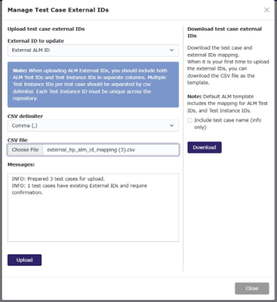
Sample CSV upload:
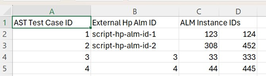
script-hp-alm-id-1), and ALM Instance Ids.Assigning ALM Instance IDs in Test Sets
When executing tests in HP ALM, the synchronization requires an External ALM Instance Id to be associated with each test case within a Test Set.
- Go to the 'Sets' tab.
- Select a Test Set and navigate to the 'Definitions' section.
- Each listed test case must have a valid 'External ALM Instance Id' assigned.
- If a test case is missing this ID, you cannot schedule a synchronization with ALM. The ID can be assigned via a dropdown menu or added as a new entry.
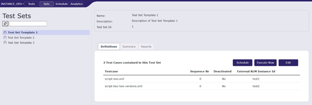
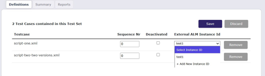
Scheduling and ALM Synchronization
Once your test cases are linked to ALM IDs and organized in a Test Set, you can schedule the run and initiate the synchronization process.
- Schedule the Run: When scheduling a test run (either immediately or for a future time), ensure the ALM sync checkbox is selected in the scheduling dialog
Schedule execution dialog with the ALM sync checkbox selected, indicating that execution results will be synchronized with HP ALM.
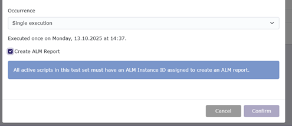
- Monitor Synchronization: After execution, the results and the synchronization status will be visible in the 'Schedule'
Schedule view displaying a history of test runs, including columns for overall execution status and ALM sync status.
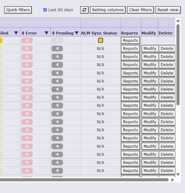
- View Sync Logs:Clicking on the 'Reports' button for a completed execution opens a detailed view, which includes execution status and ALM sync logs
Detailed execution report with a link to the ALM Sync Log, providing information on the synchronization outcome.
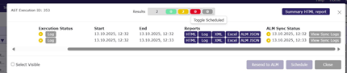
- Detailed Logs and Errors: Detailed logs, including the time, status, and any errors from the synchronization attempt, can be viewed in the log window
Panel in the detailed execution report showing the ALM Sync Logs with timestamps, status, and any troubleshooting information.

Sync Failures and Troubleshooting
If a synchronization fails, the AST Control Panel provides tools for troubleshooting and retrying the sync.
- Failure Icon: A failure icon will appear in the ALM Sync Status column for any failed synchronization.
- View Error Details: Clicking the 'Log' button provides the error details for the failed sync.
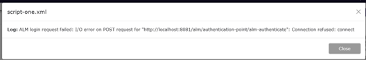
- Download JSON Payload: You can click the 'ALM JSON' button to download the raw JSON payload that was sent to ALM. This file can be used for manual upload or debugging the data structure.
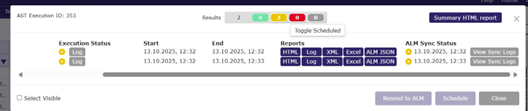
- Resend to ALM: To retry the synchronization after resolving the issue, select the failed test(s) and click the 'Resend to ALM' button.
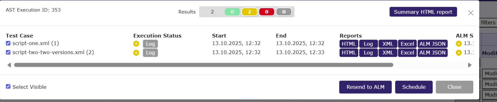
Below is an example of a JSON payload sent to ALM:
{
"Type": "run",
"Fields": [
{"values": [{"value": "Test Import from AST"}], "Name": "name"},
{"values": [{"value": "admin"}], "Name": "owner"},
{"values": [{"value": "sript-hp-alm-id-1"}], "Name": "test-id"},
{"values": [{"value": "test1"}], "Name": "testcycl-id"},
{"values": [{"value": "Failed"}], "Name": "status"},
{"values": [{"value": "hp.qc.run.MANUAL"}], "Name": "subtype-id"},
{"values": [{"value": "2025-10-13"}], "Name": "execution-date"},
{"values": [{"value": "12:32:59"}], "Name": "execution-time"}
]
}
Jira Xray
This chapter explains how to set up the AST Control Panel to integrate with Jira using the Xray test management app. This integration allows you to link your automated test cases to external IDs, track execution results, and view synchronization status and logs directly from AST.
Configuration Settings
To enable the integration, an administrator must navigate to the application properties in the AST Control Panel:
- Enable Integration: Ensure that the property
ast-control-panel.integration.xray.enabledis set to true. - Enter Connection Details: Input the required Xray configuration parameters, such as the URL and JWT token.
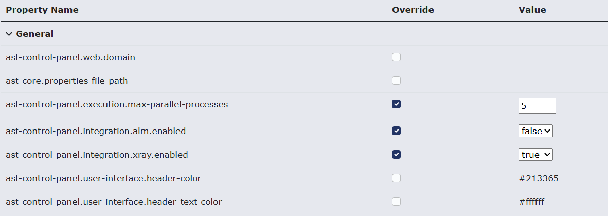
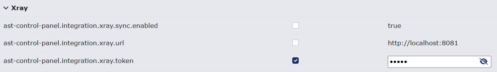
Setting Environment Variables(Optional)
If needed the xray sync endpoint can be adjusted by setting the environment variable AST_CONTROL_PANEL_XRAY_SYNC_ENDPOINT to the desired URL.
The default value for this variable is /rest/raven/2.0/import/execution.
If your Xray instance uses a different endpoint, you can set the environment variable accordingly. On how to set environment variables please refer to the Setting environment variables documentation.
Assigning External XRAY IDs to Test Cases
You must link your AST test cases to their corresponding Xray test entities in Jira by assigning an External Xray ID.
Individual Asignement
- Go to the 'Test' tab and select a test case to open its details.
- Use the field in the detail view to assign or edit the 'External XRAY ID'.
Bulk Assigment (CSV Upload)
- Right-click on a test case in the repository tree and select 'Manage External IDs'.
- This dialog allows you to upload mappings via a CSV file. The CSV must contain the AST Test Case ID and the External Xray ID.
Sample Xray CSV Upload - Example content showing the required columns: AST Test Case ID and External Xray ID for bulk mapping:
AST Test Case ID,External Xray ID;
1,script-xray-id-1;
2,script-xray-id-2;
5,script-xray-id-5;
6,script-xray-id-6;
Scheduling and XRAY Synchronization
When a test run is scheduled, you must specify the unique Xray Execution ID that results will be synced to. This is different from the External Xray ID used for individual test cases.
Vieving Reports and Sync Logs
After a test run is complete, you can review its status and troubleshoot any issues.
- View Sync Status: Click the 'Reports' button for a completed execution to open a detailed view showing the test execution status and Xray sync logs.
- Detailed Logs: In the Reports pop-up window, you can see the synchronization status for each test case and click 'View Sync Log' for detailed event records.
- Manual JSON Download: You can download the raw JSON payload sent to Xray by clicking the 'XRAY JSON' button. This file contains the execution results and metadata, which is useful for debugging.
Below is an example of a JSON payload sent to XRAY:
{
"testExecutionKey": "xray-1",
"tests": [
{
"testKey": null,
"start": "2025-10-23T10:27:09+02:00",
"finish": "2025-10-23T10:29:33+02:00",
"status": "FAIL",
"comment": "*Test Execution Info*\n || Key || Value ||\n | Testcase ID | 260 |\n | Testcase Name | stex_13.xml |\n | Testcase Link | 127.0.0.1:8080/testcase-repository/260 |\n | Test Set ID | 41 |\n | Test Set Name | reporting_test |\n | Test Set Link | 127.0.0.1:8080/test-sets/41 |\n | Execution Instance | INSTANCE_DEV |\n ",
"evidences": [],
"customFields": [
{
"id": "2",
"value": "|| Type || User || Description || Operation Type || Err.Message || Status || CreationTime ||\n"
},
{
"id": "1",
"value": "127.0.0.1:8080/api/execution/scripts/ast/report/retrieve/by/deeplink/?reportDownloadKey=KN2jJBjKp2v8RLcbBbdWdiSAJpOMQBSFMRWLUdIDxcpuFzBckZ8xD4zPFomD7p4Az39god0GsCDbggUb9TMEVQM7rjm3hDAR8EeC&mimeTypeString=text%2Fhtml"
}
]
}
]
}
Keycloak
The keycloak profile allows you to integrate the AST Control Panel with Keycloak for user authentication and role management.
Prerequisite
- Currently the app does not redirect to the Keycloak login page, the authentication process is handled outside of the application. This means that you need to have a service which adds the authorization header with a valid Bearer token to each request when accessing the AST Control Panel. You can ask your Keycloak admin for more details as we have no knowledge about your setup.
Setup
Info
All of these environment variables need to be set up in the same place as the variables mentioned in the Minimal deployment settings
- Firstly the keycloak profile must be set as an env variable in your deployment file:
SPRING_PROFILES_ACTIVE=prod,api-docs,keycloak
Important
prod and api-docs profiles have to be specified also when using keycloak otherwise the app would start in dev profile which could corrupt the data in your db
- To set up oauth2 correctly these two variables need to be set with your settings:
SPRING_SECURITY_OAUTH2_RESOURCESERVER_JWT_ISSUER_URI=https://your.keycloak.address.com/realms/your_realm_name SPRING_SECURITY_OAUTH2_RESOURCESERVER_JWT_JWK_SET_URI=https://your.keycloak.address.com/realms/your_realm_name/openid-connect/certs
Info
For the SPRING_SECURITY_OAUTH2_RESOURCESERVER_JWT_JWK_SET_URI use the JWK URL provided by your keycloak instance. Usually it is the url with /certs at the end.
-
Other settings that have to configured in an deployment file:
AST_CONTROL_PANEL_SSO_USERNAME_CLAIM=preferred_username AST_CONTROL_PANEL_SSO_ROLES_CLAIM=sourceGroups AST_CONTROL_PANEL_SSO_ROLE_MAPPING_ROLE_ADMIN=admin,admin2 AST_CONTROL_PANEL_SSO_ROLE_MAPPING_ROLE_USER=user,user2AST_CONTROL_PANEL_SSO_USERNAME_CLAIM- specifies the claim from which the username will be extracted. This username has to be uniqueAST_CONTROL_PANEL_SSO_ROLES_CLAIM- specifies the claim from which the roles should be extractedAST_CONTROL_PANEL_SSO_ROLE_MAPPING_ROLE_ADMIN:specifies which roles from the claims will be mapped as the admin role in the app. It can be more then one role.ROLE_MAPPING_ROLE_USERspecifies which roles from the claims will be mapped as the user role in the app. It can be more then one role. -
If your keycloak instance is using self-signed certificates you need to import the certificate in the java truststore of the application. See the Setting up a truststore section.
Behavior of the application with keycloak profile active
After the keycloak profile activation the authentication process is entirely handled by keycloak. Which will lead to the following changes in the behavior of the application:
-
You can navigate directly to the application and you will be logged in right away.
-
The authentication endpoint is disabled and each request to the API will require a Bearer token. The API functionality remains the same but you must provide a Bearer token in the Authorization header. You can get the Bearer token from your Keycloak instance (You need to ask you Keycloak admin for more details as we have no knowledge about your setup).
-
The user management part is not available when keycloak profile is active. Reason being that the users are managed in keycloak and not in the app. So if you want to add a new user you need to do it in keycloak and not in the app.
-
If there was already a user created via ast with the same username as is being used by a keycloak user this user modified to a keycloak user automatically.
-
If an ast user is deactivated or was deleted and a keycloak user with the same user name logs in, the keycloak user has precedence as the data in JWT claims are taken into consideration.
Deployment
Using provided helm chart
Minimal Settings for Deployment
In your own Values.yaml you have to set the imageAst property and potentially also imagePullSecrets if your registry requires authentication.
The values that are not set in your Values.yaml will be taken from the default Values.yaml provided in the helm chart.
Please refer to the Values.yaml file in the provided helm chart for more details.
For the solution to be able to start 3 environment variables need to be set:
SPRING_DATASOURCE_URL=jdbc:oracle:thin:@your_db_address:1521/YOUR_SCHEMA
SPRING_DATASOURCE_USERNAME=your_username
SPRING_DATASOURCE_PASSWORD=your_password
If you would need further settings like ingress, resources, port, replicas and others please refer to the Values.yaml file in the provided helm chart. For environment variables settings, secret settings, SSL and other please refer to the sections below.
Setting up environment variables
Using env and envSecrets
To set up environment variables for the application, you can use the env section in the Values.yaml file of the helm chart. Here is an example of how to set up the required environment variables:
env:
SPRING_DATASOURCE_URL: "jdbc:oracle:thin:@your_db_address:1521/YOUR_SCHEMA"
SPRING_DATASOURCE_USERNAME: your_username
SPRING_DATASOURCE_PASSWORD, it is recommended to use Kubernetes secrets. You can create a secret and then reference it in the Values.yaml file. Here is an example of how to reference it:
envSecrets:
SPRING_DATASOURCE_PASSWORD:
secretName: ast-control-panel-db-password-secret
key: password
Using the spring additional configuration file
Alternatively, you can set up environment variables by using an additional configuration file. You can create a file named ast-control-panel.properties and add your environment variables in the following format:
spring.datasource.url=jdbc:oracle:thin:@your_db_address:1521
SPRING_CONFIG_ADDITIONAL_LOCATION environment variable. Here is an example of how to do this in the Values.yaml file:
env:
SPRING_CONFIG_ADDITIONAL_LOCATION: "/deployment/ast-control-panel.properties"
files directory of the helm chart and mount it as a config map. The config map name is controlpanel-config nad the subpath is additional_config.properties. For more detail see Mounting Volumes
Mounting volumes
To mount a volume , you can use the volumes and volumeMounts sections in the Values.yaml file. Example of mounting a secret and a config map as volumes:
# Volume mounts for the container. Optional.
volumeMounts:
- name: saml-truststore
mountPath: /deployments/data/saml-truststore
readOnly: true
- name: astconfig-volume
mountPath: /home/jboss/ast.properties
subPath: ast.properties
readOnly: true
# Volumes for the pod. Optional.
volumes:
- name: saml-truststore
secret:
secretName: samlTruststore
- name: astconfig-volume
configMap:
name: astconfig
Mounting of ast.properties (Optional)
If you want to mount(For more detail see Mounting Volumes) the ast.properties instead of uploading them manually in the admin section of the app, you can use the provided config map.
You need to put the file you want to mount into the files directory of the helm chart and then specify the name of the file in the Values.yaml file.
For mounting of the ast.properties you can use the core-config config map. For example, for ast.properties the subpath is ast.properties.
Important
If you want to use this option, you need to specify the path to the properties file in the ast.core.properties-file.path property in the admin UI or as an environment variable.
Check the Configuration section for more details.
Setting up a keystore for SSL
You can do this by creating a secret with the keystore file and then mounting it as a volume in your deployment. Also you need to setup some environment variables to specify the path to the truststore and its password.
Here is an example of how to do this in the Values.yaml file:
# Environment variables for the container. Optional. Add as needed.
env:
SERVER_SSL_ENABLED: true
SERVER_SSL_KEY_STORE_TYPE: JKS #depends o yor preference
SERVER_SSL_KEY_STORE: file:/deployments/data/ssl-keystore/keystore.jks
SECURITY_REQUIRE_SSL: true
# Environment variables from Kubernetes secrets. Optional. Add as needed.
envSecrets:
SERVER_SSL_KEY_STORE_PASSWORD:
secretName: ssl-password-secret
key: password
# Volume mounts for the container. Optional.
volumeMounts:
- name: ssl-keystore
mountPath: /deployments/data/ssl-keystore
readOnly: true
# Volumes for the pod. Optional.
volumes:
- name: ssl-keystore
secret:
secretName: your-ssl-keystore-secret-name
Setting up a truststore for SSL
You can set up a truststore for SSL by creating a secret with the truststore file and then mounting it as a volume in your deployment(similar as Setting up a keystore for SSL ).
Also, you need to set up some environment variables to specify the path to the truststore and its password. Here is an example of how to do this in the Values.yaml file:
# Environment variables for the container. Optional. Add as needed.
env:
JAVAX_NET_SSL_TRUSTSTORE: /deployments/data/truststore.p12
# Environment variables from Kubernetes secrets. Optional. Add as needed.
envSecrets:
JAVAX_NET_SSL_TRUSTSTORE_PASSWORD:
secretName: ssl-password-secret
key: password
# Volume mounts for the container. Optional.
volumeMounts:
- name: ssl-truststore
mountPath: /deployments/data/truststore.p12
readOnly: true
# Volumes for the pod. Optional.
volumes:
- name: ssl-truststore
secret:
secretName: your-ssl-truststore-secret-name
Another option is to use just the cacerts.
# Environment variables for the container. Optional. Add as needed.
env:
JAVAX_NET_SSL_TRUSTSTORE: /deployments/data/cacerts
# Volume mounts for the container. Optional.
volumeMounts:
- name: cacerts
mountPath: /deployments/data/cacerts
readOnly: true
# Volumes for the pod. Optional.
volumes:
- name: cacerts
secret:
secretName: cacerts-secret-name
Setting a custom context path
By default, the application is served at the root context path. If you want to serve the application at a custom context path, you can set the context-path property in the Values.yaml file.
Important
The context path setting requires a cookie to work properly. If you set a custom context path, make sure to configure your ingress or load balancer to handle cookies correctly. Otherwise, you may encounter issues with the application. The cookie looks like this: contextPath=/your-context-path
Other settings
For other possible settings like ingress, resources, port, replicas and others please refer to the Values.yaml file in the provided helm chart.
Using docker
You can run the application in the command line using docker. The app should be deployed like this only for test purposes. For minimal settings you need to set up the same environment variables as for the helm chart deployment. Here is an example of how to run the application using docker with the required environment variables:
docker run -e SPRING_DATASOURCE_USERNAME=your_username -e SPRING_DATASOURCE_URL=jdbc:oracle:thin:@your_db_address:1521/YOUR_SCHEMA -e SPRING_DATASOURCE_PASSWORD=your_password --network host path/to/your/iamge/ast-control-panel:image_tag
As in the helm chart deployment, you can also set up environment variables using an additional configuration file and mount it as a volume in the docker container.
You can use the same example of the ast-control-panel.properties file and specify the path to this file in the SPRING_CONFIG_ADDITIONAL_LOCATION environment variable.
Using your own deployment setup
You can also deploy the application on your own without using the provided helm chart. In this case we can provide limited support as we have no knowledge about your infrastructure and deployment setup.
Security
This section outlines how users are managed and secured within the AST Control Panel, covering login methods, user administration, and system-level security best practices.
User Access and Administration
The AST Control Panel handles user authentication either by the application’s internal account system or by an external IAM (Keycloak). For more information refer to the Login and User Management section.
Secure Communication (HTTPS/SSL)
Warning
By default, the AST Control Panel uses HTTP. Because sensitive information, including passwords, can be easily viewed or altered over the network in HTTP, it is strongly recommended to enable network encryption (SSL/HTTPS).
- Automatic Redirection: If you enable SSL, any unsecured HTTP requests will be automatically forwarded to HTTPS.
- SSL Configuration: For detailed instructions on setting up SSL, refer to the Setting up truststore or Setting up keystore section in the deployment documentation.
Protecting Sensitive Credentials
For more information refer to Environment Secrets
Avaloq Security
AST does not allow direct access to Avaloq by users. Avaloq credentials are kept in the ast.properties file. Read and write access to this file should be restricted to AST users with admin role.
All activities made by a user, leading to test cases execution against Avaloq, have to be embedded in a testcase and saved. (version control applies, previous versions are kept and are auditable)
Given AST testcases are used to prepare synthetic data and simulate complex testcases, optimal results are achieved by using the Avaloq k-user. However, if security limitations forbid usage of k-user, it is possible to set up a non k-user as a proxy user for AST. See section below for instructions.
Logs of test case execution are stored and secured in the database. Log are kept read-only. Test execution logs are separated from AST application logs. Application logs are stored on the pod.
Setting up a non k-user
Create a Technical User: In Avaloq, create a technical user as a parameterization. In this example, we'll call it MDB$TEST_PROXY:
[user 1.0]
user MDB$TEST_PROXY
name "MDB$TEST_PROXY"
type tech
restricted true
end user
CREATE USER MDB$TEST_PROXY IDENTIFIED BY TEST_PROXY;
GRANT EXECUTE ANY PROCEDURE TO MDB$TEST_PROXY;
GRANT SELECT ANY SEQUENCE TO MDB$TEST_PROXY;
GRANT SELECT ANY TABLE TO MDB$TEST_PROXY;
GRANT CREATE SESSION TO MDB$TEST_PROXY;
begin
session#.open_session;
base_par_intf#.base_par#set_val(
i_intl_id => 'avq.user'
,i_item => 'proxy_session'
,i_val => 'MDB$TEST_PROXY'
);
commit;
end;
exec session#.reset_package;
select base_par_intf#.base_par#val(
'avq.user',
'proxy_session'
)
from dual;
exec k.session#.open_session(i_oracle_user => 'avaloq');
Important
Finally, remember to enable the ast.proxy.avaloq.session.user property in ast.properties (e.g., ast.proxy.avaloq.session.user=avaloq). This allows for readiness checks and initial evaluations before the first test run, which defines the specific Avaloq user you'll be using.
System requirements
The solution uses these technologies and frameworks:
- React 17
- Java 17 with Spring Boot 3.5.x
- Oracle DB(Client owned)
Minimal requirements for deployment
- Environment capable of running a docker container.
- Minimum of 4GB RAM. Memory requirements may increase based on the load on the system.
- Port 8080 by default, should be available for the application to run. This can be configured in the deployment file. See the Deployment section for more details.
- Avaloq instance is reachable from the machine where AST is deployed.
- On the client-side, a modern web browser (e.g., Chrome, Edge) is required to access the AST Control Panel.
- DB size minimum 10GB, but it can grow based on the amount of data generated by the tests. The database is used to store test cases, execution results, and other related data.
Frequently asked questions
After setting a custom context path, the application is not working properly, how to fix it?
Make sure that your ingress or load balancer is configured to handle cookies correctly. The context path requires a cookie to work properly, so if the cookies are not handled correctly, the application may not work as expected. For more information on how to set a custom context path, see the Setting a custom context path section in the Deployment documentation.
Scheduled executions are not running, how to fix it?
Restart the pod where the application is running. This will trigger the scheduler to start working again and the scheduled executions should run as expected.
Can the Avaloq DB connection credentials be stored as a secret?
At the moment it is not possible to store the secrets separately. You need to store the ast.properties file as a whole in a secret if you want to use secrets for storing the database connection details. For more information see Mounting of ast.properties (Optional) section in the Deployment documentation.
Can the Applications DB credentials be stored as a secret?
Yes, if you decide to use environment variables for setting up the database connection, you can store the password in a secret and reference it in the Values.yaml file. For more information see Setting up environment variables section in the Deployment documentation.
If you decide to use a custom configuration file(Addional config file) for these variables, then you need to store the whole file as a secret if you want to use secrets for storing the database connection details. For more information refer to the Deployment documentation.
I have set up my Jira Xray / ALM integration, but the solution is throwing a certificate/ssl error. How to resolve this issue?
Most probably your Xray/ALM instance is using a self-signed certificate, so you need to import the certificate in the java keystore/truststore of the application. You can do this via setting correct environment variables in your deployment file. For more information on how to do this, see the Setting up a truststore for SSL or Setting up a keystore for SSL.
After Keycloak activation, I am getting 401 Unauthorized error when trying to access the API, how to fix it?
After the activation of the Keycloak profile, the authentication endpoint is disabled and each request to the API will require a Bearer token. For more information on how to set up Keycloak integration, see the Keycloak documentation.
After the setting of the context path, the application is not working properly.
Make sure that your ingress,load balancer or reverse proxy is configured to handle cookies correctly. The context path requires a cookie to work properly, so if the cookies are not handled correctly, the application may not work as expected. For more information on how to set a custom context path, see the Setting a custom context path section in the Deployment documentation.
The application experienced a crash and the test run logs are not accessible, how to retrieve the logs?
Unfortunately, in this case, the logs are not retrievable as they were not saved in the database. The logs are stored in the database only after the test run is finished, so if the application crashes during the test run, the logs will not be saved and therefore not accessible.
Best practices
Have oracle flashback enabled for the database.
We strongly recommend to have flashback enabled for the database to be able to rollback in case of any issues during the upgrade. This will allow you to quickly restore the database to its previous state without needing to perform a full restore from backup, which can be time-consuming. After the rollback you can revert to the previous version of AST and investigate the issue before attempting the upgrade again.
Warning
Do not revert to the previous version of AST without rolling back the database first, as this can lead to data inconsistencies and potential loss of data. Always ensure that the database is rolled back to the state before the upgrade before reverting to the previous version of AST.
Release notes
Version 4.8.0
Breaking Changes
Important!
You have to only adjust only properties that you have set in your deployment file. Properties that can be set via the UI will be adjusted automatically.
Xray properties changes:
parexa.ast-control-panel.integration.xray.sync.enabled → ast-control-panel.integration.xray.sync-enabled
parexa.ast-control-panel.integration.xray.sync.endpoint → ast-control-panel.integration.xray.sync-endpoint
ALM properties changes:
parexa.ast-control-panel.integration.alm.endpoint.login → ast-control-panel.integration.alm.endpoint-login
parexa.ast-control-panel.integration.alm.endpoint.session → ast-control-panel.integration.alm.endpoint-session
Other properties changes:
parexa.ast-control-panel.backend.max-process-duration-in-hours → ast-control-panel.execution.max-process-duration-in-hours
parexa.ast.core.properties-file.path → ast-core.properties-file-path
parexa.ast-control-panel.web.domain → ast-control-panel.web.domain
parexa.ast-control-panel.execution.max-parallel-processes → ast-control-panel.execution.max-parallel-processes
New Features
- Keycloak integration - see documentation here
- Added downloading of historical execution data
- Added Execution Id and External Xray Id as columns in the schedule view
Bug Fixes
- Fixed testcase ordering by priority
- Fixed testcase sequence issue in testset
- Disable download button when date range is incomplete in historical executions
- Fixed timestamp constraint that caused a crash on startup
Other Changes
- Changed docker image to a rootless image
- Added curl to image
- Updated core to version 3.11.0
- Updated dependency versions, mainly spring boot to version 3.5.7
Version 4.8.1
Bug Fixes
- Fixed error when changing the context path
Version 4.8.2
Bug Fixes
- Add fallback to prevent OPTIONS returning a 401 response
Version 4.8.3
Bug Fixes
- Moved URL parameters to the body for scheduling
Version 4.8.5
Bug Fixes
- Moved URL parameters to the body for testset scheduling
Version 4.8.6
Bug Fixes
- Displaying Xray token correctly in frontend
- Xray token retrieved correctly from DB
Version 4.8.7
Bug Fixes
- Saving throwing error when not using override on Alm properties
- Remove extra segment from login endpoint path, causing 405 error in ALM
Version 4.8.8
Bug Fixes
- Fix ALM 401 error on the sync endpoint
Version 4.8.9
Bug Fixes
- Removed method causing to reuse old cookies in ALM and add cookie logging
Version 4.8.10
Bug Fixes
- Fix 404 on ALM auth and session endpoints
Version 4.8.11
Bug Fixes
- Combine cookies from login and session requests in ALM
Version 4.8.12
Bug Fixes
- Use ALM username in payload